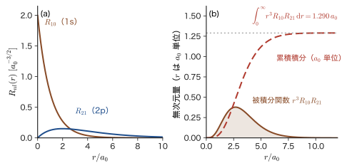
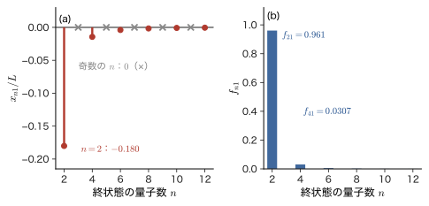
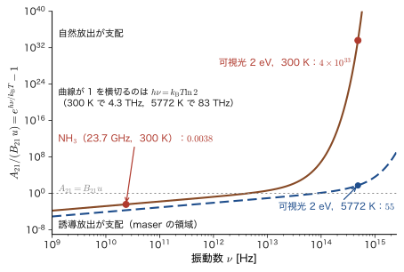
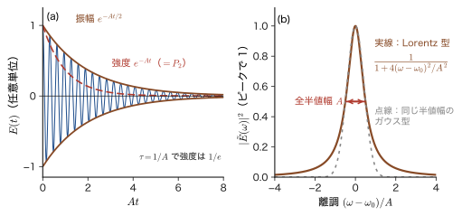
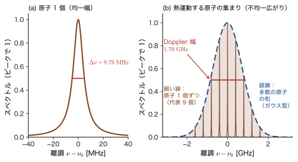

第52章光の吸収と放出 — 電気双極子近似・選択則・Einstein の係数・寿命と線幅
蛍光灯や LED の色，ルビーの赤い発光，ナトリウムランプの黄色い光——私たちが目にする「色」の多くは，原子・分子・結晶の中の電子が，光を吸ったり出したりして準位のあいだを移る（遷移する）ことでつくられる．どの遷移が起こり，どれだけの速さで起こり，出てくる光の色はどれほど鋭いのか．この章では，それを量子力学で計算する．使う道具は，前章で手に入れた時間依存の摂動論と Fermi（フェルミ）の黄金律である．光を，外から原子にかかる振動する電場とみなし，その電場と電子との相互作用を摂動として黄金律に代入する．
古典物理（AD 03 第42章 42.4）では，光は電場と磁場が振動しながら空間を伝わる波であり，電荷を揺さぶる．原子の中の電子はその力で振動し，同じ振動数の光を再放射する．量子力学では，電子が連続的に振動するのではなく，準位のあいだを遷移する．古典の絵との違いは 3 つある．(i) 遷移は，準位のエネルギー差 $\hbar\omega_{fi}$ が光のエネルギー $\hbar\omega$ に一致するときだけ起こる（黄金律の $\delta$ 関数）．(ii) 遷移の強さは，電気双極子 $\hat{\bm{d}}=-e_0\hat{\bm{r}}$ の行列要素 $\mel{f}{\hat{\bm{d}}}{i}$ の絶対値の 2 乗で決まるので，これが $0$ になる遷移は起こらない．これが選択則である．(iii) 励起状態は，光が当たっていなくても自然に光を出して落ちていく（自然放出）．そのため励起状態には寿命があり，スペクトル線には幅ができる．
この章では光を古典的な波として扱う（半古典論）．これで，光を吸う過程と，光に誘われて光を出す過程（誘導放出）の速さは正しく求まる．自然放出は古典的な電磁場だけからは出てこないが，Einstein（アインシュタイン）が 1917 年に考えた熱平衡の論法を使うと，吸収の計算から自然放出の速さまで決まってしまう．光そのものを量子化して自然放出を直接導く方法は第X部（第60章）で扱い，この章の結果と一致することをそこで確かめる．材料の色と発光（錯体・蛍光体・レーザー結晶・半導体），分光の線幅の読み方は，すべてこの章の考え方から出発する．
- 電子と電磁場の結合（最小結合）$\hat{H}=(\hat{\bm{p}}+e_0\bm{A})^2/2m_{\mathrm e}+V$ から出発し，$\hat{H}_1=(e_0/m_{\mathrm e})\bm{A}\cdot\hat{\bm{p}}$ を経て，電気双極子近似 $e^{i\bm{k}\cdot\bm{r}}\simeq1$ のもとで $\hat{H}_1=-\hat{\bm{d}}\cdot\bm{E}$（$\hat{\bm{d}}=-e_0\hat{\bm{r}}$）が得られること，行列要素の関係 $\bm{p}_{fi}=im_{\mathrm e}\omega_{fi}\bm{r}_{fi}$ と，近似が成り立つ範囲
- 単色光の遷移率 $w=\dfrac{\pi}{2\hbar}E_0^2\abs{\hat{\bm{\epsilon}}\cdot\bm{d}_{fi}}^2\delta(E_f-E_i-\hbar\omega)$ と，等方的な広帯域光の吸収率 $w=B_{12}\,u(\omega)$，$B_{12}=\dfrac{\pi\abs{\bm{d}_{12}}^2}{3\varepsilon_0\hbar^2}$
- 電気双極子遷移の選択則（パリティ，$\Delta l=\pm1$，$\Delta m=0,\pm1$，$\Delta S=0$）を行列要素の積分から導き，水素の $\mel{1s}{z}{2p_0}=\dfrac{2^7\sqrt2}{3^5}a_0$ を計算できること
- Einstein の熱平衡の論法で $g_1B_{12}=g_2B_{21}$，$A_{21}=\dfrac{\hbar\omega^3}{\pi^2c^3}B_{21}$ を導き，自然放出率 $A_{21}=\dfrac{\omega^3\abs{\bm{d}_{12}}^2}{3\pi\varepsilon_0\hbar c^3}$ を水素の $2p\to1s$（$6.27\times10^{8}\ \mathrm{s^{-1}}$，$1.60\ \mathrm{ns}$）で確かめること
- 自然放出と誘導放出の比 $A_{21}/(B_{21}u)=e^{\hbar\omega/k_{\mathrm B}T}-1$ から，可視光では自然放出が，マイクロ波では誘導放出が支配的になる理由を説明できること
- 励起状態の寿命 $\tau=1/A$ と Lorentz 型のスペクトル線の幅 $\Delta E=\hbar A$（自然幅）の関係，Doppler 幅・衝突広がり・不均一広がりとの大小
もとにしたノート：本章はノートにない内容を補った章である．関連するノート：望月泰英『物理学ノート 量子力学3』 p. 2（Zeeman 効果とスピン）．
52.1 電磁場の中の電子 — 最小結合と相互作用ハミルトニアン
光が原子に当たると，原子の中の電子に電場と磁場の力がはたらく．この節では，その力を量子力学のハミルトニアンの項 $\hat{H}_1(t)$ として書き下す．電場だけが静的にかかっているなら，静電ポテンシャルのエネルギー $q\Phi$ を位置エネルギーとして足せば済む．しかし光は，電場と磁場が時間変化しながら伝わる波であり，磁場の力 $q\bm{v}\times\bm{B}$ は速度に依存するので，位置だけの関数 $V(\bm{r})$ では表せない．そこで，ベクトルポテンシャル $\bm{A}$ を使うハミルトニアンから出発し，52.2 節で，電場だけを使う直観的な形 $-\hat{\bm{d}}\cdot\bm{E}$ に戻る．まず古典力学で，電磁場の中の荷電粒子のハミルトニアンを確かめ，そのあとで電子の場合を量子力学に移す．
注意：文字の使い方（太字の $\bm{A}$，$\bm{B}$，Einstein の係数，そのほかの二重使用）
この章には，名前の似た量が出てくる．太字の $\bm{A}$ はベクトルポテンシャル，太字の $\bm{B}$ は磁束密度で，ベクトルである．これに対して，添字のついた $A_{21}$，$B_{12}$，$B_{21}$ は 52.5 節の Einstein の係数で，数（1 つの値）である．磁束密度の大きさを書くときは，太字でない $B$（たとえば $\mu_{\mathrm B}B$）を使うが，添字の有無で Einstein の係数と区別できる．また，光の，単位体積・単位角振動数あたりのエネルギー密度は $u(\omega)$ と書く．吸収係数 $\alpha_{\mathrm{abs}}$（第53章）と微細構造定数 $\alpha$ は，この章では使わない．
ほかにも，同じ文字を別の量に使う箇所がある．混同しないよう，次のように書き分ける．
- $\hat{\bm{\epsilon}}$（偏光ベクトル．ハットは単位ベクトルを表し，演算子ではない），$\varepsilon_0$（真空の誘電率），$\varepsilon$（モル吸光係数．単位 $\mathrm{L\,mol^{-1}\,cm^{-1}}$）は別の量である．
- 太字の $\bm{E}$（電場）と振幅 $E_0$ に対し，$E_i$，$E_f$，$E_1$，$E_2$ のように準位の番号を添えたものは準位のエネルギーである．
- $\Phi$ は 52.1 節のスカラーポテンシャルだけに使い，発光の量子収率は $\eta_{\mathrm{PL}}$（52.6 節）と書く．
- パリティの固有値は $P=\pm1$ と書き，円周率 $\pi$ や，$\pi$ 偏光の $\pi$ と区別する．
- 線形関数は $\phi(\omega)$（52.3 節．方位角は $\varphi$ と書く），Lorentz 型の線形は $L(\omega)$（52.6 節），準位の縮退度は $g_1$，$g_2$ である．
- 減衰率は $A$（Einstein の係数 $A_{21}$ に等しい）で，古典的な減衰率は $A_{\mathrm{cl}}$ と書く．群の表現の $\Gamma$ はこの章では 52.4.1 節の応用の囲みだけに現れる．
52.1.1 古典力学から — 正準運動量は質量×速度ではない
電荷 $q$，質量 $m$ の粒子が，電場 $\bm{E}$ と磁場 $\bm{B}$ の中を速度 $\bm{v}$ で動くとき，粒子にはたらく力は Lorentz 力 $\bm{F}=q(\bm{E}+\bm{v}\times\bm{B})$ である（AD 03 第39章 39.4）．量子力学はハミルトニアンから出発するので，この力を与えるハミルトニアンを先に知っておかなければならない．電場と磁場は，スカラーポテンシャル $\Phi$（この章でだけ使う文字で，Slater 行列式とは無関係）とベクトルポテンシャル $\bm{A}$ を使って
\begin{equation} \bm{E}=-\nabla\Phi-\pdiff{\bm{A}}{t},\qquad \bm{B}=\nabla\times\bm{A} \label{eq:52-potentials} \end{equation}と表される．そして，電磁場の中の荷電粒子のハミルトニアンは，運動量 $\bm{p}$ を $\bm{p}-q\bm{A}$ に置き換えた次の形になる（この置き換えを最小結合という）．
法則52.1 電磁場の中の荷電粒子のハミルトニアン（最小結合）
\begin{equation} H=\frac{\left(\bm{p}-q\bm{A}(\bm{r},t)\right)^2}{2m}+q\Phi(\bm{r},t)+U(\bm{r}) \label{eq:52-Hclass} \end{equation}$\bm{p}$ は正準運動量，$U(\bm{r})$ は電磁場の外の力（原子核の Coulomb 力など）による位置エネルギーである．
このハミルトニアンが本当に Lorentz 力を与えることを，Hamilton の方程式で確かめておこう．
導出：式 \eqref{eq:52-Hclass} から Lorentz 力が出る
成分を $i=x,y,z$ で表し，$\partial_i=\partial/\partial x_i$ と書く．簡単のため $U=0$ とする．Hamilton の方程式 $\dot{x}_i=\partial H/\partial p_i$ から
$$ \dot{x}_i=\frac{p_i-qA_i}{m}\qquad\text{すなわち}\qquad mv_i=p_i-qA_i $$である．つぎに $\dot{p}_i=-\partial H/\partial x_i$ を計算する．$H$ を $x_i$ で微分すると，$(\bm{p}-q\bm{A})^2$ の中の $A_j$ だけが $x_i$ に依存するので，
$$ \dot{p}_i=\frac{q}{m}\sum_j(p_j-qA_j)\,\partial_iA_j-q\,\partial_i\Phi=q\sum_jv_j\,\partial_iA_j-q\,\partial_i\Phi $$となる（$p_j-qA_j=mv_j$ を使った）．一方，$mv_i=p_i-qA_i$ を時間で微分すると，$A_i$ は粒子の位置 $\bm{x}(t)$ と時刻 $t$ を通して時間に依存するので，$\dfrac{\dd A_i}{\dd t}=\pdiff{A_i}{t}+\sum_jv_j\,\partial_jA_i$ を使って
$$ m\dot{v}_i=\dot{p}_i-q\frac{\dd A_i}{\dd t} =q\left(-\partial_i\Phi-\pdiff{A_i}{t}\right)+q\sum_jv_j\left(\partial_iA_j-\partial_jA_i\right) $$を得る．右辺の第 1 項は式 \eqref{eq:52-potentials} より $qE_i$ である．第 2 項の $\sum_jv_j(\partial_iA_j-\partial_jA_i)$ は，$\bm{v}\times(\nabla\times\bm{A})$ の第 $i$ 成分に等しい（たとえば $i=x$ では $v_y(\partial_xA_y-\partial_yA_x)+v_z(\partial_xA_z-\partial_zA_x)=v_y(\nabla\times\bm{A})_z-v_z(\nabla\times\bm{A})_y=(\bm{v}\times\bm{B})_x$）．よって $m\dot{\bm{v}}=q(\bm{E}+\bm{v}\times\bm{B})$ となり，Lorentz 力が得られた．
（導出終わり）
注意：$\bm{p}$ は「質量×速度」ではない
導出の途中で見たように，電磁場があるとき，速度に比例するのは $\bm{p}-q\bm{A}$ であって（$m\bm{v}=\bm{p}-q\bm{A}$），$\bm{p}$ そのものではない．$\bm{p}$ は正準運動量と呼ばれる．量子力学で $\hat{\bm{p}}=-i\hbar\nabla$ と置くのは正準運動量のほうである．ポテンシャル $\bm{A}$ は $\nabla\chi$ の形の量を足しても（ゲージ変換）同じ $\bm{E}$，$\bm{B}$ を与えるので，$\bm{p}$ 自体は観測量ではなく，観測できるのは $\bm{p}-q\bm{A}$ である．
52.1.2 電子と電磁場の結合 — $\hat{H}_1=(e_0/m_{\mathrm e})\bm{A}\cdot\hat{\bm{p}}$
電子の電荷は $q=-e_0$，質量は $m_{\mathrm e}$ である．式 \eqref{eq:52-Hclass} の $\bm{p}$ を演算子 $\hat{\bm{p}}=-i\hbar\nabla$ に置き換え，光（放射場）にはスカラーポテンシャルを含めない（$\Phi=0$）として，原子の中の電子のハミルトニアンを書くと，
\begin{equation} \hat{H}=\frac{\left(\hat{\bm{p}}+e_0\bm{A}(\bm{r},t)\right)^2}{2m_{\mathrm e}}+V(\bm{r}) \label{eq:52-Hfull} \end{equation}となる．$V(\bm{r})$ は原子核（と他の電子）による位置エネルギーである．2 乗を展開しよう．$\hat{\bm{p}}$ と $\bm{A}(\bm{r},t)$ は交換しないので，順序を保って展開する：
\begin{equation} \hat{H}=\frac{\hat{\bm{p}}^2}{2m_{\mathrm e}}+V+\frac{e_0}{2m_{\mathrm e}}\left(\hat{\bm{p}}\cdot\bm{A}+\bm{A}\cdot\hat{\bm{p}}\right)+\frac{e_0^2}{2m_{\mathrm e}}\bm{A}^2 \label{eq:52-Hexpand} \end{equation}第 3 項の $\hat{\bm{p}}\cdot\bm{A}$ を，任意の波動関数 $\psi$ に作用させて調べる．積の微分を使うと，
$$ \hat{\bm{p}}\cdot(\bm{A}\psi)=-i\hbar\nabla\cdot(\bm{A}\psi)=-i\hbar(\nabla\cdot\bm{A})\,\psi+\bm{A}\cdot(-i\hbar\nabla\psi)=-i\hbar(\nabla\cdot\bm{A})\,\psi+\bm{A}\cdot\hat{\bm{p}}\psi $$である．光の波では $\nabla\cdot\bm{A}=0$ の選び方（Coulomb ゲージ）ができる．たとえば平面波 $\bm{A}\propto\hat{\bm{\epsilon}}\sin(\bm{k}\cdot\bm{r}-\omega t)$ では，$\nabla\cdot\bm{A}\propto\bm{k}\cdot\hat{\bm{\epsilon}}\cos(\bm{k}\cdot\bm{r}-\omega t)$ なので，$\bm{k}\cdot\hat{\bm{\epsilon}}=0$，すなわち $\bm{A}$ が進行方向に垂直（横波）であれば $\nabla\cdot\bm{A}=0$ である（$\hat{\bm{\epsilon}}$ は $\bm{A}$ の向きを表す単位ベクトルで，偏光ベクトルという．この章では，ハットは偏光ベクトルにも付けるが，演算子ではなく単位ベクトルであることを表す．真空の誘電率 $\varepsilon_0$ とは別の文字である）．このとき $\hat{\bm{p}}\cdot\bm{A}=\bm{A}\cdot\hat{\bm{p}}$ となって，式 \eqref{eq:52-Hexpand} の第 3 項は $\dfrac{e_0}{m_{\mathrm e}}\bm{A}\cdot\hat{\bm{p}}$ にまとまる．
公式52.1 光と電子の相互作用（速度ゲージ）
原子のハミルトニアン $\hat{H}_0=\dfrac{\hat{\bm{p}}^2}{2m_{\mathrm e}}+V(\bm{r})$ に，光が次の摂動を与える．
\begin{equation} \hat{H}_1(t)=\frac{e_0}{m_{\mathrm e}}\,\bm{A}(\bm{r},t)\cdot\hat{\bm{p}} \label{eq:52-H1vel} \end{equation}全体は $\hat{H}=\hat{H}_0+\hat{H}_1(t)+\dfrac{e_0^2}{2m_{\mathrm e}}\bm{A}^2$ で，最後の $\bm{A}^2$ の項は光の場の 2 次であり，1 光子の吸収・放出には寄与しない．
最後の項 $\dfrac{e_0^2}{2m_{\mathrm e}}\bm{A}^2$ を落としてよい理由を述べておく．この項は $\bm{A}$ の 2 乗（光の強さに比例する量）で，$\hat{H}_1$ に比べて $e_0A_0/\abs{\hat{\bm{p}}}$ の程度だけ小さい（この比が小さいことは例題52.1 で確かめる）．さらに，次の 52.2 節の電気双極子近似では $\bm{A}$ が位置によらない量になるので，$\bm{A}^2$ は電子の座標を含まない c 数（演算子でない数）であり，どの準位にも同じ量を足すだけで，準位のあいだの遷移を起こさない．なお，電子のスピンの磁気モーメント $\hat{\bm{\mu}}=-g_{\mathrm e}\mu_{\mathrm B}\hat{\bm{S}}/\hbar$ と光の磁束密度 $\bm{B}=\nabla\times\bm{A}$ の結合 $-\hat{\bm{\mu}}\cdot\bm{B}$ という別の項もあるが，これは電場による結合に比べて $\hbar k/(2\abs{\hat{\bm{p}}})\sim ka_0/2$ 程度小さい（$\bm{k}$ は光の波数ベクトル．52.2.1 節）．この項は磁気双極子遷移の原因になり，第63章（Dirac 方程式の非相対論的極限）で導かれる．
52.1.3 平面波の光 — 電場の大きさと光の強さ
原子に当たる光を，角振動数 $\omega$，波数ベクトル $\bm{k}$（$\abs{\bm{k}}=k=\omega/c=2\pi/\lambda$）の直線偏光の平面波としよう．ベクトルポテンシャルを
\begin{equation} \bm{A}(\bm{r},t)=A_0\,\hat{\bm{\epsilon}}\,\sin(\bm{k}\cdot\bm{r}-\omega t),\qquad \bm{k}\cdot\hat{\bm{\epsilon}}=0 \label{eq:52-A} \end{equation}とおく．$\hat{\bm{\epsilon}}$ は実数の単位ベクトル（直線偏光）である．円偏光は 52.4 節で扱う．電場と磁束密度は，式 \eqref{eq:52-potentials}（$\Phi=0$）から
\begin{equation} \bm{E}=-\pdiff{\bm{A}}{t}=E_0\,\hat{\bm{\epsilon}}\cos(\bm{k}\cdot\bm{r}-\omega t),\qquad \bm{B}=\nabla\times\bm{A}=\frac{E_0}{c}\,(\bm{e}_k\times\hat{\bm{\epsilon}})\cos(\bm{k}\cdot\bm{r}-\omega t) \label{eq:52-EB} \end{equation}となる．$\bm{e}_k=\bm{k}/k$ は進行方向の単位ベクトルで，電場の振幅 $E_0$ は $E_0=\omega A_0$，磁束密度の振幅は $E_0/c$（$\bm{E}\perp\bm{B}\perp\bm{k}$，$E=cB$．AD 03 42.4）である．この波のエネルギー密度は，電場と磁場の寄与が等しく，時間平均で
\begin{equation} u_{\mathrm{tot}}=\frac{1}{2}\varepsilon_0E_0^2,\qquad \text{強度}\quad I=c\,u_{\mathrm{tot}}=\frac{1}{2}c\,\varepsilon_0E_0^2 \label{eq:52-I} \end{equation}である（電場のエネルギー密度の時間平均 $\tfrac14\varepsilon_0E_0^2$ と磁場のそれとの和．AD 03 42.5）．$\mathrm{W/m^2}$ で測った強度 $I$ から，電場の振幅は $E_0=\sqrt{2I/(c\varepsilon_0)}$ と求まる．
例題52.1 光の強さと電場の振幅，摂動として扱えるか
(1) 太陽光（強度 $I=1\ \mathrm{kW/m^2}$）と，パルスレーザー（$I=1\ \mathrm{GW/cm^2}$）の電場の振幅 $E_0$ を求めよ．(2) 水素原子の中で電子が原子核から受ける電場 $E_{\mathrm{at}}=\dfrac{e_0}{4\pi\varepsilon_0a_0^2}$ と比べよ．(3) 波長 $500\ \mathrm{nm}$ で，$e_0A_0$ と原子の中の電子の運動量の目安 $\hbar/a_0$ の比を求めよ．
解答 (1) 式 \eqref{eq:52-I} より $E_0=\sqrt{2I/(c\varepsilon_0)}$．$c\varepsilon_0=2.998\times10^{8}\times8.854\times10^{-12}=2.654\times10^{-3}\ \mathrm{A/V}$ である．太陽光は $I=10^3\ \mathrm{W/m^2}$ なので，$E_0=\sqrt{2\times10^3/(2.654\times10^{-3})}=\sqrt{7.54\times10^{5}}=868\ \mathrm{V/m}$．レーザーは $I=10^9\ \mathrm{W}/10^{-4}\ \mathrm{m^2}=10^{13}\ \mathrm{W/m^2}$ なので，$E_0=\sqrt{2\times10^{13}/(2.654\times10^{-3})}=8.68\times10^{7}\ \mathrm{V/m}$ である．磁束密度の振幅 $E_0/c$ は，太陽光で $2.9\ \mathrm{\mu T}$，レーザーで $0.29\ \mathrm{T}$ である．
(2) $E_{\mathrm{at}}=\dfrac{1.602\times10^{-19}}{4\pi\times8.854\times10^{-12}\times(5.292\times10^{-11})^2}=5.14\times10^{11}\ \mathrm{V/m}$ である．比は，太陽光で $868/(5.14\times10^{11})=1.7\times10^{-9}$，レーザーで $8.68\times10^{7}/(5.14\times10^{11})=1.7\times10^{-4}$ である．どちらも光の電場は原子内の電場よりはるかに弱く，光は摂動として扱える．
(3) $\omega=2\pi c/\lambda=3.77\times10^{15}\ \mathrm{s^{-1}}$（$\hbar\omega=2.48\ \mathrm{eV}$）．太陽光では $A_0=E_0/\omega=868/(3.77\times10^{15})=2.30\times10^{-13}\ \mathrm{V\,s/m}$．$e_0A_0$ の単位は $\mathrm{C}\cdot\mathrm{V\,s/m}=\mathrm{J\,s/m}$ で運動量の単位である．$\hbar/a_0=1.0546\times10^{-34}/(5.292\times10^{-11})=1.993\times10^{-24}\ \mathrm{kg\,m/s}$ なので，$\dfrac{e_0A_0}{\hbar/a_0}=\dfrac{1.602\times10^{-19}\times2.30\times10^{-13}}{1.993\times10^{-24}}=1.85\times10^{-8}$．レーザーでは $A_0$ が $10^{5}$ 倍（$E_0$ の比 $\sqrt{10^{10}}=10^5$）なので $1.85\times10^{-3}$ である．この比は $\dfrac{e_0E_0a_0}{\hbar\omega}$（電場が原子の大きさの上でする仕事と光子のエネルギーの比）に等しく，どちらの場合も $1$ よりはるかに小さい．したがって $\bm{A}^2$ の項は $\bm{A}\cdot\hat{\bm{p}}$ の項より小さく，落としてよい． （もっと強い光，たとえば比が $1$ に近いレーザーでは，この摂動論は成り立たない．）
考察：光を古典的な波として扱ってよいのか
光は本来，光子の集まり（第3章，第4章）であり，電磁場そのものも量子化される（第60章）．それでも，この章で光を古典的な波として扱ってよいのは，吸収と誘導放出の速さを求めるときである．これらの速さは，光の強さ（そのモードにある光子数 $n$）に比例し，$n$ が大きいほど古典的な波の近似がよくなる．一方，光が 1 個もないとき（$n=0$）にも起こる自然放出の速さは，古典的な場の計算では出てこない．量子化された場では，放出の速さは $n+1$ に比例し，$n$ は誘導放出，$1$ は自然放出になる（第60章）．本章では，この「$+1$」を，52.5 節で Einstein の熱平衡の論法から間接的に決める．
52.2 電気双極子近似 — 速度ゲージから長さゲージへ
式 \eqref{eq:52-H1vel} は，そのままでも計算に使える．しかし，光の波長が原子の大きさよりずっと長いことを使うと，もっと見通しのよい形に書き換えられる．結果は，古典電磁気学で「電場の中の電気双極子のエネルギー $-\bm{d}\cdot\bm{E}$」として知られているものになる．この節ではその書き換えを 2 通りの方法で行う．
52.2.1 位相因子 $e^{i\bm{k}\cdot\bm{r}}$ は $1$ とおける — 電気双極子近似
式 \eqref{eq:52-A} のベクトルポテンシャルは，電子の位置 $\bm{r}$（原子核を原点にとる）に依存する．オイラーの公式で
$$ \bm{A}(\bm{r},t)=\frac{A_0}{2i}\,\hat{\bm{\epsilon}}\left[e^{i(\bm{k}\cdot\bm{r}-\omega t)}-e^{-i(\bm{k}\cdot\bm{r}-\omega t)}\right] $$と書き，位相因子を展開すると，
\begin{equation} e^{\pm i\bm{k}\cdot\bm{r}}=1\pm i\,\bm{k}\cdot\bm{r}-\tfrac12(\bm{k}\cdot\bm{r})^2\mp\cdots \label{eq:52-expk} \end{equation}である．電子が動く範囲は原子の大きさ $a\sim a_0$（$\sim0.05\ \mathrm{nm}$）程度で，可視光の波長は $\lambda\sim500\ \mathrm{nm}$ だから，展開の大きさを決める量 $\abs{\bm{k}\cdot\bm{r}}\lesssim ka_0=2\pi a_0/\lambda\sim7\times10^{-4}$ は $1$ よりはるかに小さい（図52.1）．そこで，展開の第 1 項だけを残す近似を行う．
定義52.1 電気双極子近似
光の波長が原子の大きさよりはるかに長いので（$\abs{\bm{k}\cdot\bm{r}}\ll1$），電子のいる範囲で光の場は位置によらない一様な場とみなせる．すなわち，式 \eqref{eq:52-expk} で $e^{\pm i\bm{k}\cdot\bm{r}}\simeq1$ とおく近似を電気双極子近似（electric dipole approximation）という．このとき，式 \eqref{eq:52-A} は $\bm{A}(t)=-A_0\hat{\bm{\epsilon}}\sin\omega t$ となり，電場は原子の位置で $\bm{E}(t)=E_0\hat{\bm{\epsilon}}\cos\omega t$ である．
電気双極子近似で，式 \eqref{eq:52-H1vel} は
\begin{equation} \hat{H}_1(t)=-\frac{e_0A_0}{m_{\mathrm e}}\sin\omega t\;\hat{\bm{\epsilon}}\cdot\hat{\bm{p}} =\hat{V}e^{-i\omega t}+\hat{V}^\dagger e^{i\omega t},\qquad \hat{V}=-i\,\frac{e_0A_0}{2m_{\mathrm e}}\,\hat{\bm{\epsilon}}\cdot\hat{\bm{p}} \label{eq:52-H1V} \end{equation}となる（$-\sin\omega t=(e^{-i\omega t}-e^{i\omega t})/2i$ を使った．$\hat{\bm{\epsilon}}\cdot\hat{\bm{p}}$ はエルミートなので，$e^{i\omega t}$ の係数は $\hat{V}$ のエルミート共役 $\hat{V}^\dagger=+i\frac{e_0A_0}{2m_{\mathrm e}}\hat{\bm{\epsilon}}\cdot\hat{\bm{p}}$ である）．これは前章の Fermi の黄金律の摂動 $\hat{H}_1=\hat{V}e^{-i\omega t}+\hat{V}^\dagger e^{i\omega t}$ と同じ形である（ここでの $\hat{V}$ と行列要素 $V_{fi}$ は，光による摂動の $e^{-i\omega t}$ の係数で，原子の位置エネルギー $V(\bm{r})$ とは別のものである）．
例題52.2 電気双極子近似が成り立つ範囲
原子の大きさ（電子の広がり）を $a_0=0.0529\ \mathrm{nm}$ として，次の光について $a_0/\lambda$ と $ka_0=2\pi a_0/\lambda$ を求め，電気双極子近似がよいかどうか判断せよ．(1) 可視光 $\lambda=500\ \mathrm{nm}$．(2) 水素の Lyman $\alpha$ 線 $\lambda=121.6\ \mathrm{nm}$．(3) X 線 $\lambda=0.1\ \mathrm{nm}$．(4) NH$_3$ 分子の反転遷移のマイクロ波 $\nu=23.7\ \mathrm{GHz}$（分子の大きさを $0.1\ \mathrm{nm}$ とする）．
解答 (1) $a_0/\lambda=0.0529/500=1.06\times10^{-4}$，$ka_0=2\pi\times1.06\times10^{-4}=6.6\times10^{-4}$．$\ll1$ で，よい近似である．(2) $a_0/\lambda=0.0529/121.6=4.35\times10^{-4}$，$ka_0=2.7\times10^{-3}$．やはりよい近似である．(3) $a_0/\lambda=0.0529/0.1=0.53$，$ka_0=2\pi\times0.53=3.3$．$1$ に近いかそれより大きいので，外側の電子に対しては電気双極子近似は破れる（高次の項が同程度になる）．ただし，X 線吸収で実際に関わる内殻の電子は，軌道が原子番号 $Z$ に反比例して小さく（半径は $a_0/Z$ 程度），たとえば Cu（$Z=29$）の K 殻で $r\sim0.0018\ \mathrm{nm}$，K 吸収端の波長 $0.138\ \mathrm{nm}$ に対して $kr=2\pi\times0.0018/0.138\approx0.08$ と小さい．内殻の吸収は，電気双極子近似でほぼ説明できる．(4) マイクロ波の波長は $\lambda=c/\nu=2.998\times10^{8}/(2.37\times10^{10})=12.6\ \mathrm{mm}$ で，$\lambda$ に対する分子の大きさの比は $0.1\ \mathrm{nm}/12.6\ \mathrm{mm}=7.9\times10^{-9}$，$kr=5\times10^{-8}$ である．電気双極子近似は極めてよい．
52.2.2 高次の項 — 磁気双極子と電気四重極
展開式 \eqref{eq:52-expk} の第 2 項 $i\bm{k}\cdot\bm{r}$ まで残すと，$\hat{H}_1$ に $(\hat{\bm{\epsilon}}\cdot\hat{\bm{p}})(\bm{k}\cdot\bm{r})$ の形の項が現れる．これは，対称な部分と反対称な部分に分けられる．対称な部分 $\tfrac12[(\hat{\bm{\epsilon}}\cdot\hat{\bm{p}})(\bm{k}\cdot\bm{r})+(\bm{k}\cdot\hat{\bm{p}})(\hat{\bm{\epsilon}}\cdot\bm{r})]$ は電気四重極（E2）遷移を与える．反対称な部分は，ベクトルの恒等式 $(\bm{r}\times\hat{\bm{p}})\cdot(\bm{k}\times\hat{\bm{\epsilon}})=(\bm{r}\cdot\bm{k})(\hat{\bm{p}}\cdot\hat{\bm{\epsilon}})-(\bm{r}\cdot\hat{\bm{\epsilon}})(\hat{\bm{p}}\cdot\bm{k})$ により，軌道角運動量 $\hat{\bm{L}}=\bm{r}\times\hat{\bm{p}}$ と磁束密度の向き $\bm{k}\times\hat{\bm{\epsilon}}\propto\bm{B}$ の内積 $\propto\bm{B}\cdot\hat{\bm{L}}$ になり，磁気双極子（M1）遷移を与える（スピンの項 $-\hat{\bm{\mu}}\cdot\bm{B}$ も同じ M1 に入る）．これらの大きさを，電気双極子（E1）と比べたのが表52.1 である．
| 種類 | 相互作用 | 振幅の比（E1 を 1 として） | 遷移率の比 | 例 |
|---|---|---|---|---|
| 電気双極子 E1 | $-\hat{\bm{d}}\cdot\bm{E}$ | $1$ | $1$（許容遷移で $A\sim10^{7}$–$10^{8}\ \mathrm{s^{-1}}$） | 水素 2p→1s，Na の D 線 |
| 磁気双極子 M1 | $-\hat{\bm{\mu}}\cdot\bm{B}$ | $\dfrac{\mu_{\mathrm B}/c}{e_0a_0}=\dfrac{\hbar}{2m_{\mathrm e}ca_0}=3.6\times10^{-3}$ | $1.3\times10^{-5}$ | Eu$^{3+}$ の ${}^5D_0\to{}^7F_1$（$A\sim10\ \mathrm{s^{-1}}$ の桁） |
| 電気四重極 E2 | $\hat{Q}_{ij}\,\partial_iE_j$ | $\sim ka$（可視光で $10^{-3}$ 程度） | $\sim(ka)^2$（$10^{-7}$–$10^{-5}$） | 遷移金属の K 吸収端の前端（$1s\to3d$） |
M1 の振幅の比は次のように見積もれる．磁束密度は $B=E/c$ だから，E1 の相互作用 $e_0E\,a_0$ に対して M1 の相互作用は $\mu_{\mathrm B}B=\mu_{\mathrm B}E/c$，比は $\dfrac{\mu_{\mathrm B}}{c\,e_0a_0}=\dfrac{e_0\hbar/2m_{\mathrm e}}{c\,e_0a_0}=\dfrac{\hbar}{2m_{\mathrm e}ca_0}=3.6\times10^{-3}$（これは微細構造定数の半分，$1/274$ に等しい．第26章）で，遷移率（振幅の 2 乗）の比は $1.3\times10^{-5}$ である．E1 が禁制のとき（52.4 節）に限って，これらの高次の遷移が見える．たとえば $\mathrm{Eu^{3+}}$ を含む蛍光体で，${}^5D_0\to{}^7F_1$ の橙色の発光（波長約 $590\ \mathrm{nm}$）は，Eu が反転中心をもつ席にあるときの主な発光線で，磁気双極子遷移である．
52.2.3 速度形から長さ形へ — $\bm{p}_{fi}=im_{\mathrm e}\omega_{fi}\bm{r}_{fi}$
式 \eqref{eq:52-H1V} の $\hat{V}$ の行列要素には，運動量の行列要素 $\bm{p}_{fi}=\mel{f}{\hat{\bm{p}}}{i}$ が含まれる．これは，位置の行列要素 $\bm{r}_{fi}=\mel{f}{\hat{\bm{r}}}{i}$ と，エネルギー差を通して結びつけられる．
導出：運動量と位置の行列要素の関係
原子のハミルトニアン $\hat{H}_0=\hat{\bm{p}}^2/2m_{\mathrm e}+V(\bm{r})$ と位置 $\hat{\bm{r}}$ の交換子を求める．$V$ は位置だけの関数なので $\hat{\bm{r}}$ と交換する．$[\hat{x},\hat{p}_x]=i\hbar$ から $[\hat{x},\hat{p}_x^2]=\hat{p}_x[\hat{x},\hat{p}_x]+[\hat{x},\hat{p}_x]\hat{p}_x=2i\hbar\hat{p}_x$ なので，
$$ \comm{\hat{\bm{r}}}{\hat{H}_0}=\frac{1}{2m_{\mathrm e}}\comm{\hat{\bm{r}}}{\hat{\bm{p}}^2}=\frac{i\hbar}{m_{\mathrm e}}\hat{\bm{p}} $$である．これを $\hat{H}_0$ の固有状態 $\ket{i}$，$\ket{f}$（$\hat{H}_0\ket{i}=E_i\ket{i}$，$\hat{H}_0\ket{f}=E_f\ket{f}$）ではさむと，左辺は
$$ \mel{f}{\hat{\bm{r}}\hat{H}_0-\hat{H}_0\hat{\bm{r}}}{i}=(E_i-E_f)\,\bm{r}_{fi}=-\hbar\omega_{fi}\,\bm{r}_{fi}\qquad(\hbar\omega_{fi}=E_f-E_i) $$となる．右辺は $\dfrac{i\hbar}{m_{\mathrm e}}\bm{p}_{fi}$ なので，$\dfrac{i\hbar}{m_{\mathrm e}}\bm{p}_{fi}=-\hbar\omega_{fi}\bm{r}_{fi}$．両辺に $m_{\mathrm e}/(i\hbar)$ をかけ，$-1/i=i$ を使うと
\begin{equation} \bm{p}_{fi}=i\,m_{\mathrm e}\,\omega_{fi}\,\bm{r}_{fi} \label{eq:52-pr} \end{equation}を得る．
（導出終わり）
式 \eqref{eq:52-pr} は，古典力学で $\bm{p}=m\dot{\bm{r}}$ に対し，角振動数 $\omega_{fi}$ で振動する $\bm{r}$ の時間微分が $\pm i\omega_{fi}\bm{r}$ になること（Heisenberg 表示で $\hat{\bm{p}}=(i m_{\mathrm e}/\hbar)\comm{\hat{H}_0}{\hat{\bm{r}}}$．第50章）に対応する．これを式 \eqref{eq:52-H1V} の $\hat{V}$ の行列要素に代入すると，
\begin{equation} V_{fi}=-i\frac{e_0A_0}{2m_{\mathrm e}}\,\hat{\bm{\epsilon}}\cdot\bm{p}_{fi}=-i\frac{e_0A_0}{2m_{\mathrm e}}\cdot i\,m_{\mathrm e}\omega_{fi}\,\hat{\bm{\epsilon}}\cdot\bm{r}_{fi}=\frac{e_0A_0\,\omega_{fi}}{2}\,\hat{\bm{\epsilon}}\cdot\bm{r}_{fi} \label{eq:52-Vfi} \end{equation}である．Fermi の黄金律では $\delta(E_f-E_i-\hbar\omega)$ により $\omega=\omega_{fi}$ となるので，$A_0\omega_{fi}=A_0\omega=E_0$ を使って
$$ V_{fi}=\frac{e_0E_0}{2}\,\hat{\bm{\epsilon}}\cdot\bm{r}_{fi}=-\frac{E_0}{2}\,\hat{\bm{\epsilon}}\cdot\bm{d}_{fi}\qquad\bigl(\bm{d}_{fi}=\mel{f}{\hat{\bm{d}}}{i},\ \hat{\bm{d}}=-e_0\hat{\bm{r}}\bigr) $$となる．これは，次の相互作用
\begin{equation} \hat{H}_1(t)=-\hat{\bm{d}}\cdot\bm{E}(t),\qquad \hat{\bm{d}}=-e_0\hat{\bm{r}},\qquad \bm{E}(t)=E_0\hat{\bm{\epsilon}}\cos\omega t \label{eq:52-dE} \end{equation}の行列要素 $\mel{f}{-\hat{\bm{d}}\cdot\bm{E}}{i}$ の $e^{-i\omega t}$ の係数 $-\tfrac{E_0}{2}\hat{\bm{\epsilon}}\cdot\bm{d}_{fi}$ と，大きさも位相も一致する．
式 \eqref{eq:52-dE} は，古典電磁気学で，電気双極子モーメント $\bm{d}$ をもつ電荷の対が一様な電場 $\bm{E}$ の中でもつエネルギー $-\bm{d}\cdot\bm{E}$ そのものである（AD 03 第41章）．電子の電荷は $-e_0$ だから $\hat{\bm{d}}=-e_0\hat{\bm{r}}$ となり，$-\hat{\bm{d}}\cdot\bm{E}=e_0\hat{\bm{r}}\cdot\bm{E}$ である．この章の以後の計算は，すべてこの形 $-\hat{\bm{d}}\cdot\bm{E}$ から出発する．
注意：外場との結合の符号
この教科書では，外場との結合は物理的な形 $-\hat{\bm{d}}\cdot\bm{E}$（電子では $\hat{\bm{d}}=-e_0\hat{\bm{r}}$），磁場では $-\hat{\bm{\mu}}\cdot\bm{B}$ と書く．姉妹編「線形応答理論」（AD 08）の Fetter–Walecka 流の記法は，外場を $+f\hat{B}$ の形に書くので符号が逆になる．この違いは，線形応答を導入する第54章の囲み（54.2 節）で整理されている．
52.2.4 ゲージ変換による導出 — 速度ゲージと長さゲージは同じ物理
式 \eqref{eq:52-Vfi} は，共鳴 $\omega=\omega_{fi}$ のときに 2 つの形 $\bm{A}\cdot\hat{\bm{p}}$（速度ゲージ）と $-\hat{\bm{d}}\cdot\bm{E}$（長さゲージ）が一致することを示した．実は，電気双極子近似では，2 つのハミルトニアンは共鳴でなくても，波動関数に位置に依存する位相をかける変換（ユニタリ変換）だけで結びついている．
導出：ゲージ変換で $-\hat{\bm{d}}\cdot\bm{E}$ が出る（Göppert-Mayer（ゲッパート＝メイヤー）変換）
電気双極子近似では $\bm{A}=\bm{A}(t)$ が位置によらない．この $\bm{A}(t)$ のもとで，時間を含む Schrödinger 方程式 $$ i\hbar\pdiff{\psi}{t}=\left[\frac{(\hat{\bm{p}}+e_0\bm{A}(t))^2}{2m_{\mathrm e}}+V(\bm{r})\right]\psi $$ を考える（この方程式は $\bm{A}^2$ の項も含む）．波動関数を，位置に依存する位相因子を使って $\psi=e^{-ie_0\bm{A}(t)\cdot\bm{r}/\hbar}\,\psi'$ と書き換える．まず，$\hat{\bm{p}}=-i\hbar\nabla$ を位相因子と $\psi'$ の積に作用させると，積の微分から，位相因子の勾配 $\nabla(-e_0\bm{A}\cdot\bm{r}/\hbar)=-e_0\bm{A}/\hbar$ が $-e_0\bm{A}$ を与えて，
$$ (\hat{\bm{p}}+e_0\bm{A})\,\psi=e^{-ie_0\bm{A}\cdot\bm{r}/\hbar}\,(\hat{\bm{p}}-e_0\bm{A}+e_0\bm{A})\,\psi'=e^{-ie_0\bm{A}\cdot\bm{r}/\hbar}\,\hat{\bm{p}}\,\psi' $$となる．2 回作用させても同じなので，$(\hat{\bm{p}}+e_0\bm{A})^2\psi=e^{-ie_0\bm{A}\cdot\bm{r}/\hbar}\hat{\bm{p}}^2\psi'$ である．左辺の時間微分では，位相因子も時間に依存するので
$$ i\hbar\pdiff{\psi}{t}=e^{-ie_0\bm{A}\cdot\bm{r}/\hbar}\left[i\hbar\pdiff{\psi'}{t}+e_0\,\bm{r}\cdot\pdiff{\bm{A}}{t}\,\psi'\right] $$が得られる．両辺から共通の位相因子を外すと，$\psi'$ の方程式は
$$ i\hbar\pdiff{\psi'}{t}=\left[\frac{\hat{\bm{p}}^2}{2m_{\mathrm e}}+V(\bm{r})-e_0\,\bm{r}\cdot\pdiff{\bm{A}}{t}\right]\psi'=\left[\hat{H}_0+e_0\,\bm{r}\cdot\bm{E}(t)\right]\psi'=\left[\hat{H}_0-\hat{\bm{d}}\cdot\bm{E}(t)\right]\psi' $$となる（$\bm{E}=-\partial\bm{A}/\partial t$，$\hat{\bm{d}}=-e_0\hat{\bm{r}}$ を使った）．$\bm{A}^2$ の項は，この変換で完全に消えた．
（導出終わり）
変換の位相因子 $e^{-ie_0\bm{A}(t)\cdot\bm{r}/\hbar}$ は位置だけに依存するので，電子の位置の確率密度は変えない．光が当たる前と終わったあとには $\bm{A}=0$ で，$\psi=\psi'$ なので，遷移の確率は速度ゲージと長さゲージで同じになる．長さゲージの形 $-\hat{\bm{d}}\cdot\bm{E}$ は，$\bm{E}$ が直接出てくるので物理的な意味がわかりやすい．一方，式 \eqref{eq:52-H1vel} の速度ゲージは，固体のバンド計算（運動量の行列要素が計算しやすい）で使われる．
注意：長さ形と速度形が一致する条件
式 \eqref{eq:52-pr} を導くとき，$V$ が位置の関数だけで $\comm{\hat{\bm{r}}}{V}=0$ であることを使った．固有状態が正確に求まっているときには 2 つの形は一致するが，近似した状態を使うと，一致しないことがある（一致の度合いは，近似の良さの目安になる）．また，非局所的なポテンシャル（第一原理計算でよく使われる擬ポテンシャル）では $\comm{\hat{\bm{r}}}{\hat{V}}\neq0$ となり，式 \eqref{eq:52-pr} にそのままでは成り立たない補正項が現れる．
例題52.3 箱の中の粒子で $\bm{p}_{fi}=im_{\mathrm e}\omega_{fi}\bm{r}_{fi}$ を確かめる
幅 $L$ の 1 次元の無限井戸（壁は $x=0$ と $x=L$，$\psi_n=\sqrt{2/L}\sin(n\pi x/L)$，$E_n=n^2\pi^2\hbar^2/2mL^2$）で，$n=1\to2$ の遷移について，$x_{21}=\mel{2}{\hat{x}}{1}$，$\omega_{21}$，$p_{21}=\mel{2}{\hat{p}}{1}$ を求め，式 \eqref{eq:52-pr} が成り立つことを確かめよ．
解答 $u=\pi x/L$ とおくと，積→和の公式 $\sin2u\,\sin u=\tfrac12(\cos u-\cos3u)$ より
$$ x_{21}=\frac{2}{L}\int_0^Lx\sin\frac{2\pi x}{L}\sin\frac{\pi x}{L}\dd x=\frac{1}{L}\int_0^Lx\left[\cos\frac{\pi x}{L}-\cos\frac{3\pi x}{L}\right]\dd x $$である．部分積分で $\displaystyle\int_0^Lx\cos\frac{q\pi x}{L}\dd x=\left[\frac{Lx}{q\pi}\sin\frac{q\pi x}{L}\right]_0^L-\frac{L}{q\pi}\int_0^L\sin\frac{q\pi x}{L}\dd x=\frac{L^2}{q^2\pi^2}\left[\cos\frac{q\pi x}{L}\right]_0^L=\frac{L^2}{q^2\pi^2}\left((-1)^q-1\right)$（$q$ が整数のとき）．$q=1$ で $-2L^2/\pi^2$，$q=3$ で $-2L^2/(9\pi^2)$ なので，
$$ x_{21}=\frac1L\left[-\frac{2L^2}{\pi^2}+\frac{2L^2}{9\pi^2}\right]=-\frac{16L}{9\pi^2}=-0.180\,L $$である．エネルギー差は $E_2-E_1=(4-1)\dfrac{\pi^2\hbar^2}{2mL^2}$ なので $\omega_{21}=\dfrac{3\pi^2\hbar}{2mL^2}$．一方，運動量の行列要素は，$\hat{p}=-i\hbar\,\dd/\dd x$ と $\psi_1'=\sqrt{2/L}\,(\pi/L)\cos(\pi x/L)$ から
$$ p_{21}=-i\hbar\frac{2}{L}\frac{\pi}{L}\int_0^L\sin\frac{2\pi x}{L}\cos\frac{\pi x}{L}\dd x=-i\hbar\frac{2\pi}{L^2}\cdot\frac{L}{\pi}\int_0^\pi\sin2u\cos u\dd u $$である．$\sin2u=2\sin u\cos u$ を使うと $\displaystyle\int_0^\pi\sin2u\cos u\dd u=2\int_0^\pi\sin u\cos^2u\dd u=2\left[-\frac{\cos^3u}{3}\right]_0^\pi=\frac43$ なので，$p_{21}=-i\hbar\dfrac{2}{L}\cdot\dfrac43=-\dfrac{8i\hbar}{3L}$．これを右辺と比べる：
$$ i\,m\,\omega_{21}\,x_{21}=i\,m\cdot\frac{3\pi^2\hbar}{2mL^2}\cdot\left(-\frac{16L}{9\pi^2}\right)=-i\,\frac{48}{18}\frac{\hbar}{L}=-\frac{8i\hbar}{3L} $$となって，$p_{21}=im\omega_{21}x_{21}$ が確かめられた．（$n\neq m$ の行列要素 $x_{nm}$ は，直交性 $\int\psi_n\psi_m\dd x=0$ により，座標の原点のとり方によらない．）
52.3 遷移の速さ — 単色光と広帯域光の黄金律
相互作用 $-\hat{\bm{d}}\cdot\bm{E}$ が決まったので，前章の Fermi の黄金律に代入して，遷移の速さを求める．光の当て方によって 2 つの場合に分かれる．レーザーのような単色光と，ランプや太陽光のような広帯域の光である．
52.3.1 単色光による吸収と誘導放出
電場を，複素数の偏光ベクトル $\hat{\bm{\epsilon}}$（$\hat{\bm{\epsilon}}\cdot\hat{\bm{\epsilon}}^*=1$）を使って
\begin{equation} \bm{E}(t)=\frac{E_0}{2}\left(\hat{\bm{\epsilon}}\,e^{-i\omega t}+\hat{\bm{\epsilon}}^*e^{i\omega t}\right) \label{eq:52-Ecomplex} \end{equation}と書く．$\hat{\bm{\epsilon}}$ が実数なら直線偏光（$\bm{E}=E_0\hat{\bm{\epsilon}}\cos\omega t$）で，たとえば $\hat{\bm{\epsilon}}=(\bm{e}_x+i\bm{e}_y)/\sqrt2$ なら円偏光である（52.4.4 節）．このとき $\hat{H}_1=-\hat{\bm{d}}\cdot\bm{E}=\hat{V}e^{-i\omega t}+\hat{V}^\dagger e^{i\omega t}$ で，
$$ \hat{V}=-\frac{E_0}{2}\,\hat{\bm{\epsilon}}\cdot\hat{\bm{d}},\qquad \hat{V}^\dagger=-\frac{E_0}{2}\,\hat{\bm{\epsilon}}^*\cdot\hat{\bm{d}} $$である．前章（第51章 51.2 節）で導いた Fermi の黄金律 $w_{i\to f}=\dfrac{2\pi}{\hbar}\abs{V_{fi}}^2\delta(E_f-E_i\mp\hbar\omega)$（吸収は $-\hbar\omega$，放出は $+\hbar\omega$ を $\delta$ の中に入れる）に，$V_{fi}=-\tfrac{E_0}{2}\hat{\bm{\epsilon}}\cdot\bm{d}_{fi}$ を代入する．
公式52.2 単色光による遷移率（吸収と誘導放出）
角振動数 $\omega$，電場の振幅 $E_0$，偏光 $\hat{\bm{\epsilon}}$ の単色光が当たっているとき，始状態 $\ket{i}$ から終状態 $\ket{f}$ への遷移の速さ（単位時間あたりの確率）は，吸収（$E_f\gt E_i$）では
\begin{equation} w_{i\to f}=\frac{\pi}{2\hbar}\,E_0^2\,\abs{\hat{\bm{\epsilon}}\cdot\bm{d}_{fi}}^2\,\delta\!\left(E_f-E_i-\hbar\omega\right) \label{eq:52-w-mono} \end{equation}誘導放出（$E_f\lt E_i$）では，$\hat{\bm{\epsilon}}$ を $\hat{\bm{\epsilon}}^*$ に，$\delta$ の中を $E_f-E_i+\hbar\omega$ に置き換えたものである．$\bm{d}_{fi}=\mel{f}{\hat{\bm{d}}}{i}$ は電気双極子の行列要素（遷移双極子モーメント）である．
式 \eqref{eq:52-w-mono} の係数は，$\dfrac{2\pi}{\hbar}\abs{V_{fi}}^2=\dfrac{2\pi}{\hbar}\cdot\dfrac{E_0^2}{4}\abs{\hat{\bm{\epsilon}}\cdot\bm{d}_{fi}}^2$ から出てくる．次元を確かめておく．$E_0\abs{\bm{d}}$ はエネルギー（$\mathrm{V/m}\times\mathrm{C\,m}=\mathrm{J}$）で，その 2 乗を $\hbar\,[\mathrm{J\,s}]$ と $\delta$ 関数（$1/\mathrm{J}$）で割ると $\mathrm{J^2/(J\,s\cdot J)}=\mathrm{s^{-1}}$ となる．
吸収 $i\to f$ と誘導放出 $f\to i$ を比べよう．誘導放出の係数には $\abs{\hat{\bm{\epsilon}}^*\cdot\bm{d}_{if}}^2$ が現れるが，$\bm{d}_{if}=\bm{d}_{fi}^*$（$\hat{\bm{d}}$ がエルミート）なので $\hat{\bm{\epsilon}}^*\cdot\bm{d}_{if}=(\hat{\bm{\epsilon}}\cdot\bm{d}_{fi})^*$，その絶対値は吸収と同じである．つまり，同じ光の中で，下の準位から上の準位へ吸収される速さと，上の準位から下の準位へ誘導放出される速さは，等しい．これは，光が当たっている間，原子が「上へも下へも同じ確率で動かされる」ことを意味し，Einstein の係数 $B_{12}=B_{21}$ の起源である（52.5 節）．
52.3.2 $\delta$ 関数の意味と線の形
式 \eqref{eq:52-w-mono} の $\delta$ 関数は，終状態が連続的に並んでいる（状態密度がある）ときに意味をもつ式の名残りである（前章）．2 つの離散的な準位のあいだの遷移では，なぜ $\delta$ 関数を幅のある関数に置き換えてよいのかを，まず確かめておこう．有限の時間 $t$ だけ光が当たったとき，一次摂動の遷移確率は $\dfrac{\abs{V_{fi}}^2}{\hbar^2}\dfrac{\sin^2(\Delta t/2)}{(\Delta/2)^2}$（$\Delta=\omega_{fi}-\omega$）の形になる（前章）．$t$ が大きいと，この関数は $\Delta=0$ のまわりの幅 $2\pi/t$ ほどの細い山になり，その面積は $2\pi t$ なので $2\pi t\,\delta(\Delta)$ で近似できる．確率が $t$ に比例して増える（速さ $w$ が一定になる）のは，このためである．準位に有限の幅（52.6 節）があったり，光にスペクトルの幅があったりすると，$t$ が十分大きいとき，山の幅は $2\pi/t$ ではなくその幅で決まり，$\delta$ 関数は幅のある関数に置き換わる．この置き換えが正しいのは，遷移が遅い（速さ $w$ が線幅よりはるかに小さい）場合に限る．遷移が線幅より速くなると，原子は光と Rabi 振動をする（例題52.5）．この条件は，52.3.3 節で，光のスペクトルの幅が線幅より広いとした議論に対応する．角振動数で書くと $\delta(E_f-E_i-\hbar\omega)=\hbar^{-1}\delta(\omega_{fi}-\omega)$ なので，$\delta(\omega_{fi}-\omega)$ を，面積が $1$ の線形関数 $\phi(\omega)$（$\int\phi(\omega)\dd\omega=1$）に置き換えて
\begin{equation} w_{i\to f}=\frac{\pi}{2\hbar^2}\,E_0^2\,\abs{\hat{\bm{\epsilon}}\cdot\bm{d}_{fi}}^2\,\phi(\omega) \label{eq:52-w-g} \end{equation}とする．$\phi(\omega)$ は，たとえば 52.6 節の Lorentz 型 $\phi(\omega)=\dfrac{A/2\pi}{(\omega-\omega_{fi})^2+(A/2)^2}$（$A$ は全半値幅）で，共鳴 $\omega=\omega_{fi}$ でのピーク値は $\phi=2/(\pi A)$ である．光の角振動数を掃引して吸収の強さを測ると，この $\phi(\omega)$ の形が吸収スペクトルとして見える．
数学の道具：$\delta$ 関数の性質
この節では，$\delta(ax)=\delta(x)/\abs{a}$（$a\neq0$）と，任意の連続な関数 $F$ に対する $\int F(x)\delta(x-x_0)\dd x=F(x_0)$ を使う（大学数学 第30章 30.3）．エネルギーの $\delta$ 関数を角振動数の $\delta$ 関数に書き換えるには $\delta(\hbar x)=\delta(x)/\hbar$ を使う．
52.3.3 広帯域の光 — Einstein の $B$ 係数
単色光の場合，吸収の速さは光の電場の強さだけでなく線の形 $\phi(\omega)$ にも依存する．これに対し，太陽光やランプの光のように，広い振動数の範囲に成分をもつ光（線幅より十分に広い）では，線の形に依存しない簡単な結果になる．光を，振動数ごとに分けた単色光の重ね合わせ（互いに位相がばらばらの，非干渉性の光）と考える．
角振動数が $\omega$ から $\omega+\dd\omega$ の範囲にある成分のエネルギー密度を $u(\omega)\dd\omega$ とする．$u(\omega)$ は単位角振動数あたりのエネルギー密度（単位 $\mathrm{J\,s/m^3}$）である．振幅 $E_0$ の単色光のエネルギー密度は式 \eqref{eq:52-I} より $\tfrac12\varepsilon_0E_0^2$ だから，この範囲の成分の電場振幅の 2 乗は $E_0^2\to\dfrac{2}{\varepsilon_0}u(\omega)\dd\omega$ である．互いに干渉しない成分の遷移率は足し合わせればよいので，式 \eqref{eq:52-w-mono} を積分して
$$ w_{i\to f}=\int\frac{\pi}{2\hbar}\frac{2u(\omega)}{\varepsilon_0}\abs{\hat{\bm{\epsilon}}\cdot\bm{d}_{fi}}^2\delta\!\left(\hbar\omega_{fi}-\hbar\omega\right)\dd\omega=\frac{\pi}{\varepsilon_0\hbar^2}\,u(\omega_{fi})\,\abs{\hat{\bm{\epsilon}}\cdot\bm{d}_{fi}}^2 $$となる（$\delta(\hbar\omega_{fi}-\hbar\omega)=\hbar^{-1}\delta(\omega_{fi}-\omega)$ を使い，$\omega$ で積分した）．光が等方的（あらゆる向きから来る）で無偏光のときは，偏光の向き $\hat{\bm{\epsilon}}$ について平均する．
導出：等方的な光での平均 $\expval{\abs{\hat{\bm{\epsilon}}\cdot\bm{d}}^2}=\abs{\bm{d}}^2/3$
$\abs{\hat{\bm{\epsilon}}\cdot\bm{d}}^2=\sum_{j,l}\epsilon_j\epsilon_l^*d_jd_l^*$ で，$j,l=x,y,z$ である．偏光の向きが空間のあらゆる向きに等しい確率で分布するとき，$\expval{\epsilon_j\epsilon_l^*}=\delta_{jl}/3$ である（向きの平均はどの軸でも等しく，$\sum_j\expval{\abs{\epsilon_j}^2}=\hat{\bm{\epsilon}}\cdot\hat{\bm{\epsilon}}^*=1$ だから，各成分は $1/3$．異なる成分の積 $\expval{\epsilon_j\epsilon_l^*}$（$j\neq l$）は，向きを反転しても平均が変わらない対称性から $0$）．したがって
$$ \expval{\abs{\hat{\bm{\epsilon}}\cdot\bm{d}}^2}=\sum_{j,l}\frac{\delta_{jl}}{3}d_jd_l^*=\frac13\sum_j\abs{d_j}^2=\frac{\abs{\bm{d}}^2}{3} $$（実ベクトル $\bm{d}$ なら，$\bm{d}$ と偏光のなす角 $\theta$ について $\expval{\cos^2\theta}=1/3$ という，よく知られた平均である）．
（導出終わり）
この平均を使うと，次の結果が得られる．
公式52.3 広帯域・等方・無偏光の光による遷移率（Einstein の $B$ 係数）
\begin{equation} w_{i\to f}=B_{fi}\,u(\omega_{fi}),\qquad B_{fi}=\frac{\pi\abs{\bm{d}_{fi}}^2}{3\varepsilon_0\hbar^2} \label{eq:52-B} \end{equation}$u(\omega)$ は単位角振動数あたりの放射エネルギー密度，$\abs{\bm{d}_{fi}}^2=\abs{d_{x,fi}}^2+\abs{d_{y,fi}}^2+\abs{d_{z,fi}}^2$ である．上の準位を 2，下の準位を 1 とすると，吸収は $B_{12}=B_{21}=\dfrac{\pi\abs{\bm{d}_{12}}^2}{3\varepsilon_0\hbar^2}$ である（縮退がなければ．縮退のある準位の扱いは 52.5.2 節）．
次元を確かめよう．$\abs{\bm{d}}^2$ は $\mathrm{C^2\,m^2}$，$\varepsilon_0$ は $\mathrm{C^2/(J\,m)}$，$\hbar^2$ は $\mathrm{J^2\,s^2}$ なので，$B=\mathrm{m^3/(J\,s^2)}$ となり，$u$ の単位 $\mathrm{J\,s/m^3}$ をかけると $\mathrm{s^{-1}}$ で，確かに単位時間あたりの遷移の数になる．表52.2 にまとめる．
| 光 | 例 | 遷移率 | 備考 |
|---|---|---|---|
| 単色（スペクトル幅が線幅より狭い） | レーザー | 式 \eqref{eq:52-w-g}：$\propto E_0^2\,\phi(\omega)$ | 強い光では Rabi 振動（第51章）になる |
| 広帯域・等方・無偏光（線幅より幅が広い） | ランプ，太陽光，熱放射 | 式 \eqref{eq:52-B}：$w=B_{12}\,u(\omega_{12})$ | 線の形によらない．$u$ が線の範囲で一定 |
例題52.4 温度 5772 K の黒体放射の中の水素原子の吸収率
太陽の表面と同じ温度 $T=5772\ \mathrm{K}$ の黒体放射（あらゆる向きから来る空洞放射で，等方・無偏光）の中に，基底状態 $1s$ の水素原子がある．Lyman $\alpha$ 線（$1s\to2p_0$，$\hbar\omega=10.20\ \mathrm{eV}$）の吸収率 $w=B_{1s\to2p_0}\,u(\omega)$ を求めよ．ここで $B_{1s\to2p_0}$ は，$1s$ から特定の 1 つの状態 $2p_0$ への遷移についての係数（式 \eqref{eq:52-B} で $\abs{\bm{d}_{12}}$ を $1s$ と $2p_0$ のあいだの値にしたもの）である．遷移双極子は $\abs{\bm{d}_{12}}=e_0\times0.7449\,a_0$ とする（例題52.6 で導く）．$2p_{+1},2p_{-1}$ への吸収を含めた全体の吸収率はいくらか．（地球の上で太陽光を浴びる原子では，放射は太陽が空に張る立体角の分だけ薄まり，この空洞放射の約 $5\times10^{-6}$ 倍になる．）
解答 $\abs{\bm{d}_{12}}=1.602\times10^{-19}\times0.7449\times5.292\times10^{-11}=6.316\times10^{-30}\ \mathrm{C\,m}$（約 $1.9\ \mathrm{D}$，デバイ）．式 \eqref{eq:52-B} より
$$ B_{1s\to2p_0}=\frac{\pi\abs{\bm{d}_{12}}^2}{3\varepsilon_0\hbar^2}=\frac{\pi\times(6.316\times10^{-30})^2}{3\times8.854\times10^{-12}\times(1.0546\times10^{-34})^2}=4.24\times10^{20}\ \mathrm{m^3/(J\,s^2)} $$である．黒体放射の $u(\omega)$ は Planck の式（AD 03 53.3）$u(\omega,T)=\dfrac{\hbar\omega^3}{\pi^2c^3}\dfrac{1}{e^{\hbar\omega/k_{\mathrm B}T}-1}$ である．$k_{\mathrm B}T=8.617\times10^{-5}\times5772=0.4974\ \mathrm{eV}$ なので $\hbar\omega/k_{\mathrm B}T=10.204/0.4974=20.52$，$e^{20.52}-1=8.12\times10^{8}$．$\omega=\hbar\omega/\hbar=1.550\times10^{16}\ \mathrm{s^{-1}}$ より $\dfrac{\hbar\omega^3}{\pi^2c^3}=1.478\times10^{-12}\ \mathrm{J\,s/m^3}$ で，
$$ u(\omega)=\frac{1.478\times10^{-12}}{8.12\times10^{8}}=1.82\times10^{-21}\ \mathrm{J\,s/m^3} $$である．したがって $w=B_{1s\to2p_0}\,u=4.24\times10^{20}\times1.82\times10^{-21}=0.77\ \mathrm{s^{-1}}$（$2p_0$ への吸収率）．等方的な光では，$2p_{\pm1}$ への吸収率も $\abs{\bm{d}_{12}}$ が同じなので等しく（例題52.7），全体の吸収率は $3\times0.77=2.3\ \mathrm{s^{-1}}$ である（準位 $1s$ から準位 $2p$ 全体への係数は $B_{12}=3\times4.24\times10^{20}=1.27\times10^{21}\ \mathrm{m^3/(J\,s^2)}$ で，例題52.11 (3) と同じ値になる）．この温度の放射の中では，水素原子は約 $0.4\ \mathrm{s}$ に 1 回 Lyman $\alpha$ の光子を吸収する．光子のエネルギーが $k_{\mathrm B}T$ の 20 倍もあるので，放射の中にこの振動数の光がごくわずかしかないためである．
例題52.5 黄金律が使える範囲 — Rabi 周波数との比較
水素の Lyman $\alpha$ 線に共鳴した，電場の振幅 $E_0$ の直線偏光（$\hat{\bm{\epsilon}}\parallel z$）の単色光が当たっている．$2p_0$ と $1s$ の結合の強さを表す Rabi 周波数 $\Omega=\abs{\bm{d}_{12}}E_0/\hbar=2\abs{V_{fi}}/\hbar$（第51章 51.3 節）を，(1) 太陽光の強さ（$1\ \mathrm{kW/m^2}$，電場の振幅 $868\ \mathrm{V/m}$），(2) パルスレーザー（$1\ \mathrm{GW/cm^2}$，$8.68\times10^{7}\ \mathrm{V/m}$）について求め，自然放出の速さ $A=6.27\times10^{8}\ \mathrm{s^{-1}}$（52.5 節）と比べよ．どちらの場合に，この節の黄金律が使えるか．
解答 (1) $\Omega=\dfrac{6.316\times10^{-30}\times868}{1.0546\times10^{-34}}=5.2\times10^{7}\ \mathrm{s^{-1}}$，$\Omega/A=0.083$．(2) $\Omega=5.2\times10^{12}\ \mathrm{s^{-1}}$ で，$E_0$ が $10^5$ 倍なので $\Omega$ も $10^5$ 倍，$\Omega/A=8.3\times10^{3}$ である．黄金律は，結合が線幅（この場合は自然幅 $A$）より弱いとき（$\Omega\ll A$）に，遷移確率が時間に比例して増える（速さ $w$ が定数）ことを表す．(1) では $\Omega/A=0.08$ で，黄金律がほぼ成り立つ（実際には広帯域の太陽光なので，式 \eqref{eq:52-B} を使う）．(2) では $\Omega\gg A$ で，原子は自然放出が起こる前に，$1s$ と $2p_0$ のあいだを $\pi/\Omega\sim6\times10^{-13}\ \mathrm{s}$ で往復する（Rabi 振動）．指数的に増える確率という黄金律の描像は使えず，2 準位系の振動（第51章）を解く必要がある．（ただし，実際の $1\ \mathrm{GW/cm^2}$ の紫外光では，水素はイオン化の過程のほうが重要になる．）
52.4 選択則 — パリティ・角運動量・スピン
遷移の速さ（式 \eqref{eq:52-w-mono}，\eqref{eq:52-B}）は，遷移双極子モーメントの絶対値の 2 乗 $\abs{\bm{d}_{fi}}^2=e_0^2\abs{\mel{f}{\hat{\bm{r}}}{i}}^2$ に比例する．始状態と終状態の組によっては，この行列要素が計算しなくても厳密に $0$ になることがある．そのとき，遷移は電気双極子の過程としては禁制（forbidden）であり，$0$ でなければ許容（allowed）であるという．どの組が許容かを決める規則が選択則（selection rule）である．選択則には，パリティ，角運動量，スピンの 3 つの「ふるい」がある．以下，それぞれが行列要素の積分のどの性質から出てくるかを見る．
52.4.1 パリティの選択則（Laporte の規則）
反転 $\hat{\Pi}$（$\hat{\Pi}f(\bm{r})=f(-\bm{r})$）を考える．位置 $\hat{\bm{r}}$ は反転で符号が変わる（奇）ので，$\hat{\Pi}\hat{\bm{r}}\hat{\Pi}^{-1}=-\hat{\bm{r}}$ である．原子や，反転中心をもつ結晶の席のように，ポテンシャルが $V(-\bm{r})=V(\bm{r})$ を満たすと，$\hat{\Pi}$ は $\hat{H}_0$ と交換し，エネルギー固有状態はパリティ $P=\pm1$ をもつ（$\hat{\Pi}\ket{i}=P_i\ket{i}$，偶なら $P=+1$，奇なら $-1$）．$\hat{\Pi}$ がユニタリ（$\hat{\Pi}^\dagger=\hat{\Pi}^{-1}$）であることを使うと，
$$ \bm{r}_{fi}=\mel{f}{\hat{\bm{r}}}{i}=\mel{f}{\hat{\Pi}^\dagger\bigl(\hat{\Pi}\hat{\bm{r}}\hat{\Pi}^{-1}\bigr)\hat{\Pi}}{i}=P_f\,P_i\,(-1)\,\bm{r}_{fi} $$となる．$P_fP_i=+1$（2 つの状態のパリティが同じ）なら $\bm{r}_{fi}=-\bm{r}_{fi}$，すなわち $\bm{r}_{fi}=\bm{0}$ である（積分の言葉では，偶×奇×偶 あるいは 奇×奇×奇 の被積分関数を全空間で積分すると $0$ になる）．
法則52.2 パリティの選択則（Laporte（ラポルテ）の規則）
反転対称な系では，電気双極子遷移はパリティが変わる状態の間（偶 $\leftrightarrow$ 奇）でだけ許される．パリティが同じ状態の間（偶 $\leftrightarrow$ 偶，奇 $\leftrightarrow$ 奇）は禁制である．
中心力の場の中の 1 電子状態 $R_{nl}(r)Y_l^m(\theta,\varphi)$ のパリティは，$\bm{r}\to-\bm{r}$ で $Y_l^m\to(-1)^lY_l^m$（第16章 16.8 節）となるので $(-1)^l$ である．したがってパリティの規則は，$l$ が奇数だけ変わること（$\Delta l=\pm1,\pm3,\dots$）を要求する．多電子原子では，パリティは $\prod_j(-1)^{l_j}$（すべての電子の $l$ の和の偶奇）である．
応用：遷移金属錯体の d–d 遷移はなぜ淡いか
正八面体の錯体は，金属イオンの位置に反転中心をもつ．d 軌道はすべてパリティが偶（$l=2$）なので，$d\to d$ の遷移は偶 $\leftrightarrow$ 偶で，Laporte の規則により電気双極子としては禁制である．実際には，配位子の振動が反転対称性を一瞬壊して，奇パリティの状態がわずかに混じる（振電相互作用）ので弱く許容になり，モル吸光係数 $\varepsilon$（光路 $1\ \mathrm{cm}$，濃度 $1\ \mathrm{mol/L}$ で吸光度が $\varepsilon$ になる量．第48章 48.1 節）は $1$〜$100\ \mathrm{L\,mol^{-1}\,cm^{-1}}$ と小さい（淡い色）．反転中心をもたない四面体の錯体は奇パリティの混入がより大きく，$\varepsilon$ は数百に達する．高スピンの $d^5$（$\mathrm{Mn^{2+}}$，$\mathrm{Fe^{3+}}$）では，基底状態から出るどの d–d 遷移もスピン禁制にもなり（52.4.5 節），$\varepsilon$ が $10^{-2}$ の桁にまで下がって，ほとんど無色に見える．これに対して，配位子から金属への電荷移動遷移は，パリティが変わる許容遷移で，$\varepsilon\sim10^3$〜$10^5$ と濃い（第48章 48.2 節）．群論で書けば，許容の条件は，直積 $\Gamma_f\otimes T_{1u}\otimes\Gamma_i$ が全対称表現 $A_{1g}$ を含むことである（八面体で $\bm{r}$ は $T_{1u}$．第45章 45.8 節）．
52.4.2 角運動量の選択則 — $\Delta l=\pm1$，$\Delta m=0,\pm1$
中心力の場の中の 1 電子状態 $\ket{n,l,m}=R_{nl}(r)Y_l^m(\theta,\varphi)$ の間の行列要素は，動径部分と角度部分の積に分かれる．位置ベクトルの成分は $z=r\cos\theta$，$x\pm iy=r\sin\theta\,e^{\pm i\varphi}$ なので，
\begin{equation} \mel{n',l',m'}{\hat{\bm{r}}}{n,l,m}\ \text{の成分}\ =\ \underbrace{\int_0^\infty R_{n'l'}(r)\,r\,R_{nl}(r)\,r^2\dd r}_{\text{動径積分}}\ \times\ \underbrace{\int Y_{l'}^{m'*}\,\bigl(\cos\theta,\ \sin\theta\,e^{\pm i\varphi}\bigr)\,Y_l^m\dd\Omega}_{\text{角度積分}} \label{eq:52-radang} \end{equation}である．動径積分は $n,n'$ の組によって値が決まるだけで，一般に $0$ でない．選択則は，角度積分が $0$ になる条件から決まる．
定理52.1 電気双極子遷移の選択則（1 電子，球対称なポテンシャル）
$\mel{n',l',m'}{\hat{\bm{r}}}{n,l,m}$ が $0$ でないのは， \begin{equation} \Delta l=l'-l=\pm1,\qquad \Delta m=m'-m=0,\ \pm1 \label{eq:52-sel} \end{equation} のときだけである．$z$ 成分は $\Delta m=0$ だけを，$x+iy$ 成分は $\Delta m=+1$ だけを，$x-iy$ 成分は $\Delta m=-1$ だけを結ぶ．主量子数 $n$ の変化には制限がない．
証明は，第16章 16.8 節（定理16.6）と同じ道筋である．ここでは，光の偏光との対応が見えるように，$z$ と $x\pm iy$ を分けて書く．
証明：$\Delta m$ と $\Delta l$ の選択則
(i) $\Delta m$．角度積分の $\varphi$ 部分を先に実行する．$Y_l^m\propto e^{im\varphi}$ なので，$z$（$\varphi$ を含まない）では $\int_0^{2\pi}e^{-im'\varphi}e^{im\varphi}\dd\varphi=2\pi\delta_{m'm}$，$x\pm iy$ では $\int_0^{2\pi}e^{-im'\varphi}e^{\pm i\varphi}e^{im\varphi}\dd\varphi=2\pi\delta_{m',m\pm1}$ となる．$x=\tfrac12[(x+iy)+(x-iy)]$，$y=\tfrac1{2i}[(x+iy)-(x-iy)]$ だから，$x,y$ の行列要素は $\Delta m=\pm1$ で $0$ でない．
(ii) $z$ 成分の $\Delta l$．$\cos\theta$ を $Y_l^m$ にかけると，隣の $l$ の球面調和関数の和になる（第16章 16.8 節の式．Legendre の陪関数の漸化式 $(2l+1)\,xP_l^m=(l-m+1)P_{l+1}^m+(l+m)P_{l-1}^m$ と規格化定数から出る）：
\begin{equation} \cos\theta\;Y_l^m=\sqrt{\frac{(l+1)^2-m^2}{(2l+1)(2l+3)}}\;Y_{l+1}^m+\sqrt{\frac{l^2-m^2}{(2l-1)(2l+1)}}\;Y_{l-1}^m \label{eq:52-cosY} \end{equation}右辺は $Y_{l\pm1}^m$ しか含まない．$Y_{l'}^{m'*}$ をかけて立体角で積分すると，球面調和関数の直交性 $\int Y_{l'}^{m'*}Y_l^m\dd\Omega=\delta_{l'l}\delta_{m'm}$ により，$l'=l\pm1$ のときだけ $0$ でない．たとえば $l=0$ では，式 \eqref{eq:52-cosY} は $\cos\theta\,Y_0^0=\dfrac{1}{\sqrt3}Y_1^0$ で，$\int Y_1^{0*}\cos\theta\,Y_0^0\dd\Omega=\dfrac1{\sqrt3}$ である．
(iii) $x\pm iy$ 成分の $\Delta l$．$z$ 成分の結果から，交換子 $\comm{\hat{L}_\pm}{z}=\mp\hbar(x\pm iy)$（$\hat{L}_\pm=\hat{L}_x\pm i\hat{L}_y$．$\comm{\hat{L}_x}{z}=-i\hbar y$，$\comm{\hat{L}_y}{z}=i\hbar x$ から確かめられる）を使って導く．たとえば $x+iy=-\hbar^{-1}\comm{\hat{L}_+}{z}$ で，$\hat{L}_+\ket{l,m}=\hbar\sqrt{l(l+1)-m(m+1)}\ket{l,m+1}$（第24章）を使うと，
$$ \mel{l',m'}{x+iy}{l,m}=-\sqrt{l'(l'+1)-m'(m'-1)}\,\mel{l',m'-1}{z}{l,m}+\sqrt{l(l+1)-m(m+1)}\,\mel{l',m'}{z}{l,m+1} $$である（動径部分の $r$ は $z$ の中の $r$ として共通）．右辺の $z$ の行列要素は，$(ii)$ より $l'=l\pm1$ のときだけ $0$ でなく，$m'-1=m$ または $m'=m+1$ のとき（同じ条件 $m'=m+1$）に限られる．したがって $x+iy$ も $\Delta l=\pm1$，$\Delta m=+1$ に限られる．$x-iy=\hbar^{-1}\comm{\hat{L}_-}{z}$ も同様で，$\Delta l=\pm1$，$\Delta m=-1$ となる．
（証明終わり）
定理52.1 を，図52.2 にまとめる．s（$l=0$），p（$l=1$），d（$l=2$）の準位を並べると，$l$ が 1 だけ変わる遷移（緑の実線）が許容で，$l$ が変わらない遷移や $2$ だけ変わる遷移（赤の破線）は禁制になる．同じ準位の組で，$l$ が 1 つ違うこと（パリティが変わること）が許容の条件である．
イメージ：光子は角運動量 $1$ をもつ
$\Delta l=\pm1$ と $\Delta m=0,\pm1$ は，「光子が角運動量の量子数 $1$ に相当する角運動量（スピン $1$）を運び去る（運んでくる）」と考えると覚えやすい．光子を吸収すると，原子の角運動量は $1$ だけ（向きの成分は $0,\pm1$ だけ）変わる．これは，角運動量の合成（第25章）で，$l$ と $1$ を合成すると $l-1,l,l+1$ が得られることに対応する．さらにパリティが変わる条件が $l'=l$ を除くので，$\Delta l=\pm1$ になる．
数学の道具：球テンソル，Gaunt（ガウント）の係数，Wigner–Eckart（ウィグナー＝エッカート）の定理
位置ベクトルの成分は，球面調和関数 $Y_1^q$ と同じ変換をする量（球テンソル）として，$r_0=z=\sqrt{4\pi/3}\,rY_1^0$，$r_{\pm1}=\mp(x\pm iy)/\sqrt2=\sqrt{4\pi/3}\,rY_1^{\pm1}$ と書ける．行列要素 $\mel{l',m'}{r_q}{l,m}$ の角度部分は 3 つの球面調和関数の積の積分（Gaunt の係数）で，Clebsch–Gordan 係数（第25章 25.8 節）に比例し，角運動量の合成の三角条件 $\abs{l-l'}\le1\le l+l'$ と $m'=m+q$ を要求する．この構造を一般の系（多電子原子，分子，結晶）に広げたものが Wigner–Eckart の定理で，行列要素を「向きによらない部分（換算行列要素）」と「Clebsch–Gordan 係数」の積に分ける．選択則が，個々の波動関数の形によらず，角運動量の合成則だけで決まるのはこのためである．
52.4.3 水素原子の $1s\to2p$ — 行列要素を最後まで計算する
選択則を実際の値にしてみよう．水素原子の $1s$ と $2p_0$ のあいだの $z$ の行列要素を求める．動径関数は（$a_0$ を単位として）$R_{10}=2e^{-r}$，$R_{21}=\dfrac{1}{2\sqrt6}\,re^{-r/2}$（$a_0^{-3/2}$ 単位．第16章）で，式 \eqref{eq:52-radang} の動径積分は $r$ を $a_0$ 単位として
$$ \int_0^\infty R_{10}\,r\,R_{21}\,r^2\dd r=\frac{2}{2\sqrt6}\int_0^\infty r^4e^{-3r/2}\dd r=\frac{1}{\sqrt6}\cdot\frac{4!}{(3/2)^5}=\frac{1}{\sqrt6}\cdot\frac{768}{243}=1.2903\ (a_0\text{ 単位}) $$（$\int_0^\infty r^ne^{-\beta r}\dd r=n!/\beta^{n+1}$ を使った．$24\times32/243=768/243$），角度積分は式 \eqref{eq:52-cosY} で $l=m=0$ とおいた $1/\sqrt3$ である．したがって
\begin{equation} \mel{1s}{z}{2p_0}=\frac{768}{243\sqrt6}\cdot\frac{1}{\sqrt3}\,a_0=\frac{768}{243\cdot3\sqrt2}\,a_0=\frac{2^7\sqrt2}{3^5}\,a_0=0.7449\,a_0 \label{eq:52-1s2p} \end{equation}である（$\sqrt6\sqrt3=3\sqrt2$，$768/(3\cdot243)=256/243$，$256/\sqrt2=128\sqrt2$ を使った）．図52.3 は，被積分関数 $r^3R_{10}R_{21}$（動径積分の $r\cdot r^2$ の $r^3$）の形で，$r\approx2.7\,a_0$ にピークがあり，積分値 $1.290\,a_0$ は，1s が原子核の近くに，2p が遠くまで広がっているために，両者の重なりが $r\sim1$〜$5\,a_0$ にあることを表している．

例題52.6 水素の $\mel{1s}{z}{2p_0}$ と，$2s$ への遷移が禁制であること
(1) $\mel{1s}{z}{2p_0}$ を $a_0$ を単位として求め，遷移双極子モーメント $\abs{\bm{d}_{12}}=e_0\abs{\mel{1s}{z}{2p_0}}$ を SI 単位と debye（$1\ \mathrm{D}=3.336\times10^{-30}\ \mathrm{C\,m}$）で答えよ．(2) $\mel{1s}{z}{2s}$ を求めよ．(3) $\mel{1s}{z}{3d_0}$ を求めよ．
解答 (1) 式 \eqref{eq:52-1s2p} より $\mel{1s}{z}{2p_0}=\dfrac{2^7\sqrt2}{3^5}a_0=\dfrac{128\times1.4142}{243}a_0=0.7449\,a_0=3.942\times10^{-11}\ \mathrm{m}$．$\abs{\bm{d}_{12}}=1.602\times10^{-19}\times3.942\times10^{-11}=6.316\times10^{-30}\ \mathrm{C\,m}=1.89\ \mathrm{D}$．(2) $1s$ も $2s$ も $l=0$ で，角度積分 $\int Y_0^{0*}\cos\theta\,Y_0^0\dd\Omega=\dfrac{1}{4\pi}\cdot2\pi\displaystyle\int_{-1}^{1}\cos\theta\,\dd(\cos\theta)=0$（奇関数の積分）．動径積分の値によらず $\mel{1s}{z}{2s}=0$ で，$\Delta l=0$（パリティが同じ）の禁制遷移である．(3) $1s$ は $l=0$，$3d$ は $l=2$ で $\Delta l=2$．$\cos\theta\,Y_0^0=\tfrac{1}{\sqrt3}Y_1^0$ は $Y_2^0$ を含まないので，角度積分 $\int Y_2^{0*}\cos\theta\,Y_0^0\dd\Omega=0$ で，$\mel{1s}{z}{3d_0}=0$ である．
2s から 1s への遷移は，$\Delta l=0$ で電気双極子遷移としては禁制である．そのため $2s$ は，2p に比べて桁違いに長生きする準安定状態である（2 個の光子を同時に出す過程などでやっと壊れ，寿命は約 $0.1\ \mathrm{s}$ の桁）．一方，$2p\to1s$ は許容で，寿命は $1.6\ \mathrm{ns}$ である（52.5 節）．同じ $n=2$ に属する 2s と 2p の寿命が 8 桁も違うのは，選択則の帰結である．
52.4.4 円偏光と $\Delta m$ — $\sigma^+$，$\pi$，$\sigma^-$
$\Delta m$ の選択則は，光の偏光と直接に結びつく．式 \eqref{eq:52-Ecomplex} の吸収の演算子は $\hat{V}\propto\hat{\bm{\epsilon}}\cdot\hat{\bm{d}}$ である．$z$ 方向の直線偏光（$\hat{\bm{\epsilon}}=\bm{e}_z$）では $\hat{\bm{\epsilon}}\cdot\hat{\bm{r}}=z$ なので $\Delta m=0$ の遷移（$\pi$ 成分）が起こる．$z$ 軸の正の向きに進む円偏光で，電場が $x$ 軸から $y$ 軸の向きに回るもの（$\hat{\bm{\epsilon}}=(\bm{e}_x+i\bm{e}_y)/\sqrt2$，実際の電場は $\mathrm{Re}[\hat{\bm{\epsilon}}E_0e^{-i\omega t}]=E_0(\bm{e}_x\cos\omega t+\bm{e}_y\sin\omega t)/\sqrt2$．$\sigma^+$ 円偏光）では $\hat{\bm{\epsilon}}\cdot\hat{\bm{r}}=(x+iy)/\sqrt2$ なので，$\Delta m=+1$ の遷移だけが起こる．逆回りの $\sigma^-$（$\hat{\bm{\epsilon}}=(\bm{e}_x-i\bm{e}_y)/\sqrt2$）では $(x-iy)/\sqrt2$ で $\Delta m=-1$ である．$x$ 方向の直線偏光は $\sigma^+$ と $\sigma^-$ の重ね合わせ（$\bm{e}_x=[(\bm{e}_x+i\bm{e}_y)+(\bm{e}_x-i\bm{e}_y)]/2$）なので，$\Delta m=\pm1$ の両方を起こす．表52.3 にまとめる．
| 偏光 | 偏光ベクトル $\hat{\bm{\epsilon}}$ | 吸収の演算子 $\hat{\bm{\epsilon}}\cdot\hat{\bm{r}}$ | $\Delta m$ |
|---|---|---|---|
| $z$ 方向の直線偏光（$\pi$） | $\bm{e}_z$ | $z$ | $0$ |
| 円偏光 $\sigma^+$（$x\to y$ の向きに回る） | $(\bm{e}_x+i\bm{e}_y)/\sqrt2$ | $(x+iy)/\sqrt2$ | $+1$ |
| 円偏光 $\sigma^-$（$y\to x$ の向きに回る） | $(\bm{e}_x-i\bm{e}_y)/\sqrt2$ | $(x-iy)/\sqrt2$ | $-1$ |
| $x$ 方向の直線偏光 | $\bm{e}_x$ | $x=\frac12[(x+iy)+(x-iy)]$ | $+1$ と $-1$ の重ね合わせ |
（光学では，円偏光を左回り・右回りと呼ぶ流儀が何通りかあって，観測者がどちらから見るかで名前が逆になる．この教科書では，$\sigma^\pm$ を $\Delta m$ の符号で定義する．）円偏光の光子は，$z$ 軸まわりに $\pm\hbar$ の角運動量を運ぶ．$\sigma^+$ の光子を吸収した原子は，角運動量の $z$ 成分が $+\hbar$ だけ増えるので，$\Delta m=+1$ になる．これは角運動量の保存則で，物理的に自然である．同じことは放出でも成り立つ．ただし放出では，光子が角運動量を持ち去るので，原子の $m$ の変化（定理52.1 の $\Delta m=m_{\text{下}}-m_{\text{上}}$）は，光子が運ぶ角運動量の $z$ 成分の符号を逆にしたものになる．そこで，放出を扱う図や文では，上の準位の $m_{\text{上}}$ から下の準位の $m_{\text{下}}$ へ落ちるときの差 $m_{\text{上}}-m_{\text{下}}$（$=-\Delta m$）で書くことにする．これが $+1$ なら $\sigma^+$ の光が，$-1$ なら $\sigma^-$ の光が，$0$ なら $\pi$ の光が出る．
磁場 $\bm{B}\parallel z$ の中の原子では，$m$ の異なる準位が分かれる（Zeeman 効果，第28章 28.5 節）．たとえば $l=1$ から $l=0$ への遷移では，上の準位が $m=-1,0,+1$ の 3 つに分かれ（下の準位は $l=0$ で分裂しない），遷移は $m_{\text{上}}-m_{\text{下}}=-1,0,+1$ の 3 本になる．スピンの影響が無視できる（$S=0$ の）準位のあいだでは，分裂の大きさが上下の準位で等しいので，光子のエネルギーは $(m_{\text{上}}-m_{\text{下}})\,\mu_{\mathrm B}B$ だけずれる．これが，Lorentz の三重線（正常 Zeeman 効果）である（図52.4 (b)）．磁場の方向から見ると，$\pi$ 成分（$z$ 方向に振動する双極子）は $z$ 軸の方向には光を出さない（双極子は軸方向に放射しない）ので，見えるのは $\sigma^\pm$ の 2 本だけである．磁場に垂直な方向から見ると 3 本すべてが見え，$\pi$ 成分は磁場に平行な，$\sigma$ 成分は磁場に垂直な直線偏光である．
例題52.7 円偏光 $\sigma^+$ で水素の $1s$ から $2p$ のどの状態へ上がるか
$z$ 軸の正の向きに進む $\sigma^+$ 円偏光を，基底状態 $1s$ の水素原子に当てる．(1) 上がる先の $2p$ 状態を答えよ．(2) 遷移双極子モーメントの大きさを，$\pi$ 偏光で $1s\to2p_0$ を起こすときと比べよ．
解答 (1) 吸収の演算子は $(x+iy)/\sqrt2=r\sin\theta\,e^{i\varphi}/\sqrt2$ である．$1s$ は $Y_0^0$（$m=0$）で，$\Delta m=+1$ から終状態は $m=+1$，すなわち $2p_{+1}$ だけである．(2) 角度積分は，$l=m=0$ で $\sin\theta\,e^{i\varphi}\,Y_0^0=-\sqrt{2/3}\,Y_1^1$（次式で $l=0$，$m=0$）：
$$ \sin\theta\,e^{i\varphi}\,Y_l^m=-\sqrt{\frac{(l+m+1)(l+m+2)}{(2l+1)(2l+3)}}\,Y_{l+1}^{m+1}+\sqrt{\frac{(l-m)(l-m-1)}{(2l-1)(2l+1)}}\,Y_{l-1}^{m+1} $$なので，$\displaystyle\int Y_1^{1*}\,\frac{\sin\theta\,e^{i\varphi}}{\sqrt2}\,Y_0^0\dd\Omega=-\frac{1}{\sqrt2}\sqrt{\frac23}=-\frac{1}{\sqrt3}$ で，大きさは $\pi$ 偏光の $1/\sqrt3$（式 \eqref{eq:52-1s2p} の角度積分）と同じである．動径積分も同じ（$1.290\,a_0$）なので，$\abs{\mel{2p_{+1}}{(x+iy)/\sqrt2}{1s}}=0.7449\,a_0$ で，$1s\to2p_0$（$\pi$ 偏光）と同じ強さである．同様に，$\sigma^-$ では $2p_{-1}$ だけへ同じ強さで上がる．$1s$ から見ると，$2p_{+1},2p_0,2p_{-1}$ への遷移双極子の大きさはすべて等しい（$\abs{\bm{d}}^2=(0.7449\,e_0a_0)^2$．例題52.4 で使った）．
例題52.8 Cd の赤色線（643.8 nm）の Zeeman 三重線の間隔
Cd の赤色の線 $643.8\ \mathrm{nm}$（$^1\mathrm{D}_2\to{}^1\mathrm{P}_1$）は，スピンが打ち消す一重項どうしの遷移で，正常 Zeeman 効果の三重線を示す．磁束密度 $B=1.0\ \mathrm{T}$ で，3 本の線の (1) 振動数の間隔，(2) 波数の間隔，(3) 波長の間隔を求め，(4) 3 本を分離するために必要な分解能 $\lambda/\Delta\lambda$ を答えよ．
解答 隣り合う線の間隔は，$m_{\text{上}}-m_{\text{下}}$ が 1 だけ違う遷移のエネルギー差 $\mu_{\mathrm B}B$ である．(1) $\Delta\nu=\dfrac{\mu_{\mathrm B}B}{h}=\dfrac{9.274\times10^{-24}\times1.0}{6.626\times10^{-34}}=1.400\times10^{10}\ \mathrm{Hz}=14.0\ \mathrm{GHz}$．(2) $\Delta\tilde{\nu}=\dfrac{\mu_{\mathrm B}B}{hc}=\dfrac{1.400\times10^{10}}{2.998\times10^{10}\ \mathrm{cm/s}}=0.467\ \mathrm{cm^{-1}}$．線の波数は $1/(643.8\times10^{-7}\ \mathrm{cm})=1.553\times10^{4}\ \mathrm{cm^{-1}}$ なので，相対的な間隔は $3.0\times10^{-5}$ である．(3) $\Delta\lambda=\lambda^2\Delta\tilde{\nu}=(643.8\times10^{-7}\ \mathrm{cm})^2\times0.467\ \mathrm{cm^{-1}}=1.94\times10^{-9}\ \mathrm{cm}=0.0194\ \mathrm{nm}$．(4) $\lambda/\Delta\lambda=643.8/0.0194=3.3\times10^{4}$ である．これは Fabry–Pérot（ファブリ＝ペロー）干渉計や大型の回折格子で分解できる値である．なお，$14.0\ \mathrm{GHz}$ は Larmor（ラーモア）振動数 $\nu_{\mathrm L}=e_0B/4\pi m_{\mathrm e}$（古典的な電子の，磁場のまわりの歳差運動の振動数）に等しく，Lorentz は正常 Zeeman 効果をこの古典的な描像で説明した．
注意：スピンがあるときの遷移の本数
上の「3 本」は，上下の準位の $g$ 因子がともに $1$（スピンがない，または $S=0$）の場合である．Na の D 線（${}^2P\to{}^2S$）のようにスピンが効く場合は，準位ごとに分裂の大きさ（Landé の $g$ 因子，第26章 26.4 節）が違うので，$\Delta m=0,\pm1$ の規則は同じでも，線の位置がそろわず，${}^2P_{1/2}\to{}^2S_{1/2}$ で 4 本，${}^2P_{3/2}\to{}^2S_{1/2}$ で 6 本に分かれる（異常 Zeeman 効果）．電子のスピンが発見される前は，この「3 本のはずが 4 本や 6 本ある」ことが謎だった．
なお，Stern–Gerlach（シュテルン＝ゲルラッハ）の実験で Ag の原子線が 2 本に分かれるのは，これとは別の実験である．Ag の最外殻は $5s$ 電子で $l=0$ なので軌道の寄与はなく，スピン $m_s=\pm\tfrac12$ の 2 つの状態が，磁場の勾配で別々の向きに曲げられる（準位の分裂を，原子線の分かれ方として観る実験）．これに対して，スペクトル線の本数は，上下の準位の分裂と選択則 $\Delta m=0,\pm1$ で決まる（準位のあいだの遷移を観る実験）．上下の準位の $g$ 因子が等しければ 3 本で，異なれば 4 本や 6 本になる．
52.4.5 スピンの選択則 — $\Delta S=0$
電気双極子の演算子 $\hat{\bm{d}}=-e_0\hat{\bm{r}}$ は，電子の位置だけに作用し，スピンには作用しない．多電子の波動関数を，空間部分とスピン部分の積 $\Psi=\Psi_{\mathrm{orb}}\,\chi_{S,M_S}$（第34章）で書くと，行列要素は
$$ \mel{\Psi_f}{\hat{\bm{r}}}{\Psi_i}=\mel{\Psi_{\mathrm{orb},f}}{\hat{\bm{r}}}{\Psi_{\mathrm{orb},i}}\;\braket{\chi_{S_f,M_f}}{\chi_{S_i,M_i}}=\mel{\Psi_{\mathrm{orb},f}}{\hat{\bm{r}}}{\Psi_{\mathrm{orb},i}}\;\delta_{S_fS_i}\,\delta_{M_fM_i} $$となる．スピン部分の内積は，異なるスピン状態の直交性により $\delta_{S_fS_i}\delta_{M_fM_i}$ である．したがって，電気双極子遷移ではスピンの合計 $S$ も，その $z$ 成分 $M_S$ も変わらない．
法則52.3 スピンの選択則
電気双極子遷移では $\Delta S=0$（かつ $\Delta M_S=0$）である．$S$ が異なる状態の間の遷移（たとえば一重項 $\leftrightarrow$ 三重項，二重項 $\leftrightarrow$ 四重項）はスピン禁制である．
しかし，この禁制は厳密ではない．スピン軌道相互作用（第26章）が，$S$ の異なる状態をわずかに混ぜるからである．混ざる振幅は「相互作用の大きさ／準位の間隔」程度で，強度はその 2 乗になる．スピン禁制の遷移は，弱く，そして寿命が非常に長い発光として観測される．ルビーの $\mathrm{Cr^{3+}}$ の ${}^2E\to{}^4A_2$（$694.3\ \mathrm{nm}$，寿命約 $3\ \mathrm{ms}$．第48章 48.4 節）がその例である．有機分子の三重項状態から一重項の基底状態への発光（りん光，phosphorescence）も同じで，許容な一重項どうしの発光（蛍光，ns の桁）より桁違いに遅い．スピン軌道相互作用は原子番号 $Z$ とともに大きくなる（$\propto Z^4$．第26章）ので，Ir や Pt などの重い原子を含む錯体では三重項からの発光が速くなり，有機 EL の発光材料に使われている．
52.4.6 1 次元の例 — 箱の中の粒子と調和振動子
選択則は，1 次元の問題でも同じ方法で確かめられる．幅 $L$ の無限井戸（壁は $x=0$ と $x=L$．$\psi_n=\sqrt{2/L}\sin(n\pi x/L)$）では，$\psi_n(L-x)=(-1)^{n+1}\psi_n(x)$ なので，井戸の中心 $x=L/2$ を反転の中心とするとパリティは $(-1)^{n+1}$（基底状態 $n=1$ が偶）である．$n\neq1$ では $\braket{n}{1}=0$ だから $x_{n1}=\mel{n}{\hat{x}}{1}=\mel{n}{\hat{x}-L/2}{1}$ で，$x-L/2$ は中心について奇なので，行列要素が $0$ でないのは，$n$ が偶数のときだけである．値は，例題52.3 と同じ計算で求まる．積→和の公式 $\sin nu\,\sin u=\tfrac12\left[\cos(n-1)u-\cos(n+1)u\right]$（$u=\pi x/L$）を使うと，
$$ x_{n1}=\frac{2}{L}\int_0^Lx\sin\frac{n\pi x}{L}\sin\frac{\pi x}{L}\dd x=\frac1L\int_0^Lx\left[\cos\frac{(n-1)\pi x}{L}-\cos\frac{(n+1)\pi x}{L}\right]\dd x $$である．例題52.3 の部分積分の結果 $\displaystyle\int_0^Lx\cos\frac{q\pi x}{L}\dd x=\frac{L^2}{q^2\pi^2}\left((-1)^q-1\right)$（$q=1,2,\dots$）を，$q=n-1$ と $q=n+1$ に使う（$n\ge2$ なので $q\ge1$）と，
$$ x_{n1}=\frac{L}{\pi^2}\left[\frac{(-1)^{n-1}-1}{(n-1)^2}-\frac{(-1)^{n+1}-1}{(n+1)^2}\right] $$となる．$n$ が奇数なら $(-1)^{n\pm1}=+1$ で，$[\ ]$ の中の 2 項はどちらも $0$ になり，$x_{n1}=0$ である．$n$ が偶数なら $(-1)^{n\pm1}=-1$ で，$x_{n1}=-\dfrac{2L}{\pi^2}\left[\dfrac{1}{(n-1)^2}-\dfrac{1}{(n+1)^2}\right]$ となり，通分して $(n+1)^2-(n-1)^2=4n$ を使うと $-\dfrac{2L}{\pi^2}\cdot\dfrac{4n}{(n^2-1)^2}$ が得られる．まとめると，
\begin{equation} x_{n1}=\mel{n}{\hat{x}}{1}=\begin{cases}-\dfrac{8n\,L}{\pi^2(n^2-1)^2}&(n=2,4,6,\dots)\\[2mm]0&(n=3,5,7,\dots)\end{cases} \label{eq:52-box-x} \end{equation}である．たとえば $x_{21}=-16L/(9\pi^2)=-0.180\,L$，$x_{41}=-32L/(225\pi^2)=-0.0144\,L$ で，$n$ が大きくなるとき，急激に小さくなる（$\propto n^{-3}$）．$x_{31}=0$ である（図52.5 (a)）．吸収の強さは，遷移の角振動数 $\omega_{n1}$ も効き，無次元の振動子強度（第53章 53.3 節で一般的に扱う）$f_{n1}=\dfrac{2m\omega_{n1}}{\hbar}\abs{x_{n1}}^2$ で測られる（古典的な振動子 1 個に対する強さの比）．$\omega_{n1}=(n^2-1)\pi^2\hbar/2mL^2$ を代入すると，$f_{21}=0.961$，$f_{41}=0.0307$，$f_{61}=0.0054$ で，$1\to2$ が吸収をほとんど一手に引き受ける（図52.5 (b)）．すべての $n$ についての和は $\sum_nf_{n1}=1$（和則，第54章 54.3 節）である．

例題52.9 箱の中の粒子の遷移の強さ — $1\to2$，$1\to3$，$1\to4$
幅 $L=12\ \mathrm{nm}$ の GaAs 量子井戸の電子（$m^*=0.067\,m_{\mathrm e}$，無限井戸で近似）について，(1) 遷移双極子モーメント $\abs{d_{n1}}=e_0\abs{x_{n1}}$（$n=2,3,4$）を $\mathrm{C\,m}$ で求めよ．(2) $1\to4$ の吸収の強さは，$1\to2$ の吸収の強さの何倍か（振動子強度 $f_{n1}\propto\omega_{n1}\abs{x_{n1}}^2$ で比べよ）．(3) $1\to2$ の遷移の光子エネルギーと波長を求めよ．
解答 (1) $x_{21}=-0.1801\,L=-2.16\ \mathrm{nm}$ なので $\abs{d_{21}}=1.602\times10^{-19}\times2.16\times10^{-9}=3.46\times10^{-28}\ \mathrm{C\,m}$（約 $104\ \mathrm{D}$）．$x_{31}=0$ なので $d_{31}=0$（偶奇の選択則）．$x_{41}=-0.01441\,L=-0.173\ \mathrm{nm}$ なので $\abs{d_{41}}=2.77\times10^{-29}\ \mathrm{C\,m}$．(2) $\omega_{n1}\propto n^2-1$ なので $\omega_{41}/\omega_{21}=15/3=5$，$\abs{x_{41}}^2/\abs{x_{21}}^2=(0.01441/0.1801)^2=0.0064$．よって $f_{41}/f_{21}=5\times0.0064=0.032$，$1\to4$ は $1\to2$ の約 $1/31$ の強さである．(3) 基底準位のエネルギーは $E_1=\dfrac{h^2}{8m^*L^2}=\dfrac{\pi^2\hbar^2}{2m^*L^2}=\dfrac{0.3760\ \mathrm{eV\,nm^2}}{0.067\times(12\ \mathrm{nm})^2}=0.0390\ \mathrm{eV}$ なので，$E_2-E_1=3E_1=0.117\ \mathrm{eV}$，波長は $\lambda=\dfrac{1239.84\ \mathrm{eV\,nm}}{0.117\ \mathrm{eV}}=10.6\ \mathrm{\mu m}$（赤外）である．半導体量子井戸の，伝導帯の中の準位間の遷移（サブバンド間遷移）が赤外光で起こることを，この計算は説明している．
調和振動子でも，同じように選択則が出る．$\hat{x}=\sqrt{\hbar/2m\omega}\,(\hat{a}+\hat{a}^\dagger)$ と，$\hat{a}\ket{n}=\sqrt{n}\ket{n-1}$，$\hat{a}^\dagger\ket{n}=\sqrt{n+1}\ket{n+1}$（第13章 13.8 節）から，行列要素は $\mel{n\pm1}{\hat{x}}{n}$ だけが $0$ でなく，$\mel{n+1}{\hat{x}}{n}=\sqrt{(n+1)\hbar/2m\omega}$ である．したがって $\Delta n=\pm1$ だけが許され，調和振動子の準位は等間隔（$\hbar\omega$）なので，吸収線は $\hbar\omega$ の 1 本だけになる．分子の振動の赤外吸収は，この選択則に，「振動で分子の双極子モーメントが変化する」という条件が加わったものである（第19章 19.2 節．倍音は非調和性でわずかに許される．第20章）．導出は演習52.3 で行う．
応用：結晶の光学遷移 — 「垂直遷移」と光子の運動量
電気双極子近似 $e^{i\bm{k}\cdot\bm{r}}\simeq1$ は，光子の運動量 $\hbar\bm{k}$ が電子の運動量に比べて無視できるという意味でもある．結晶のバンドでは，電子の状態が Bloch 波数 $\bm{k}$ で指定され，光の波数（可視光で $\sim10^{7}\ \mathrm{m^{-1}}$）は，Brillouin ゾーンの大きさ $\pi/a\sim10^{10}\ \mathrm{m^{-1}}$ の $10^{-3}$ 程度にすぎない．したがって，光の吸収・放出では電子の $\bm{k}$ が変わらない（バンド図の上で垂直な遷移，直接遷移）．伝導帯の底と価電子帯の頂上が異なる $\bm{k}$ にある間接遷移型の半導体では，光子だけではこの遷移が起こらず，フォノンが運動量を補う高次の過程になるので弱い（第42章 42.7 節．直接遷移と間接遷移の吸収係数の違いは第53章 53.4 節）．
52.4.7 選択則のまとめと強度の借用
| 量 | 規則 | 根拠 | 破れるとき |
|---|---|---|---|
| パリティ | 変わる（偶 $\leftrightarrow$ 奇） | $\hat{\bm{r}}$ が奇 | 反転対称性が壊れるとき（振動・欠陥・結晶場） |
| 1 電子の軌道 | $\Delta l=\pm1$ | $\cos\theta\,Y_l^m$ の漸化式 | —（中心力場では厳密） |
| 磁気量子数 | $\Delta m=0$（$\pi$），$\pm1$（$\sigma^\pm$） | $\varphi$ 積分と偏光 | — |
| スピン | $\Delta S=0$，$\Delta M_S=0$ | $\hat{\bm{d}}$ がスピンに作用しない | スピン軌道相互作用（弱い） |
| 多電子の $LS$ 項 | $\Delta L=0,\pm1$，$\Delta J=0,\pm1$（ともに $0\leftrightarrow0$ を除く） | 光子の角運動量 $1$ | $LS$ 結合が悪くなる重い原子 |
| 調和振動 | $\Delta n=\pm1$ | $\mel{n'}{\hat{x}}{n}$ | 非調和性（倍音，結合音） |
禁制の遷移が「全く起こらない」のではなく，「弱い」だけのことが多いことを，次の例題で数値にしよう．
例題52.10 d–d 遷移は許容遷移の強度を「借りて」いる
吸収帯の積分強度から，振動子強度は $f\simeq4.32\times10^{-9}\int\varepsilon\,\dd\tilde{\nu}$（$\varepsilon$ は $\mathrm{L\,mol^{-1}\,cm^{-1}}$，$\tilde{\nu}$ は $\mathrm{cm^{-1}}$．第48章）と見積もれる．帯の形を Gauss 型とし，$\int\varepsilon\,\dd\tilde{\nu}=1.0645\,\varepsilon_{\max}\times(\text{半値全幅})$ を使う．(1) $[\mathrm{Ti(H_2O)_6}]^{3+}$ の d–d 吸収（$\varepsilon_{\max}\approx5$，半値全幅を $5000\ \mathrm{cm^{-1}}$ と仮定）と，(2) $\mathrm{MnO_4^-}$ の電荷移動吸収（$525\ \mathrm{nm}$，$\varepsilon_{\max}\approx2400$，半値全幅を $3000\ \mathrm{cm^{-1}}$ と仮定）の $f$ を求めて比べよ．(3) d–d 吸収が，許容な遷移の強度を混合によって借りていると考えたとき，混ざる許容な状態の振幅は何割か．
解答 (1) $\int\varepsilon\,\dd\tilde{\nu}=1.0645\times5\times5000=2.66\times10^{4}$ なので，$f=4.32\times10^{-9}\times2.66\times10^{4}=1.15\times10^{-4}$．(2) $\int\varepsilon\,\dd\tilde{\nu}=1.0645\times2400\times3000=7.66\times10^{6}$ なので，$f=4.32\times10^{-9}\times7.66\times10^{6}=0.033$．比は $0.033/1.15\times10^{-4}=288$（$\varepsilon$ の比 $2400/5=480$ より小さいのは，帯の幅が違うため）である．(3) d–d 遷移の状態に，パリティの異なる（許容な）状態が振幅 $c$ で混ざると，遷移双極子は $c$ 倍，強度は $c^2$ 倍になる．許容な遷移の強度を電荷移動遷移 $f=0.033$ と同程度とすると，$c^2=f_{\mathrm{dd}}/f_{\mathrm{CT}}=1.15\times10^{-4}/0.033=3.5\times10^{-3}$，$c=0.059$，すなわち約 $6\%$ の振幅の混合で説明できる．禁制といっても，わずかな混合（振幅 $6\%$，確率 $0.35\%$）が強度の桁を決める．この「強度の借用」は，ルビーの R 線（スピン軌道相互作用による混合）や，振電相互作用による d–d 帯の強度（第48章 48.2 節）の見積りと同じ考え方である．
52.5 Einstein の係数 — 吸収・誘導放出・自然放出
前節までの半古典論で，光を吸う速さと，光に誘われて光を出す速さ（誘導放出）が決まった．しかし，励起状態の原子は，光が全く当たっていなくても，ひとりでに光を出して基底状態に落ちる．この自然放出の速さは，古典的な場の計算からは出てこない．Einstein は 1917 年に，原子と熱放射が熱平衡にあるという条件だけから，自然放出の速さと吸収の速さを結びつけた．この節では，その論法をたどる．結果は，前節の黄金律の結果と組み合わせると，量子化された電磁場を使わずに自然放出の速さを与える．
52.5.1 3 つの過程と速度方程式
原子が 2 つの準位（下 $E_1$，上 $E_2$，$\hbar\omega=E_2-E_1$）をもち，まわりに，単位角振動数あたりのエネルギー密度 $u(\omega)$ の等方的な放射があるとする．光と原子のあいだには 3 つの過程がある（図52.6）．
定義52.2 Einstein の $A$ 係数と $B$ 係数
下の準位 $1$ にある原子 1 個が単位時間に光を吸収して準位 $2$ へ上がる確率を $B_{12}u(\omega)$，上の準位 $2$ にある原子 1 個が単位時間に誘導放出で準位 $1$ へ落ちる確率を $B_{21}u(\omega)$，自然放出で落ちる確率を $A_{21}$ とする．$B_{12}$，$B_{21}$，$A_{21}$ を，Einstein の係数という（$A_{21}$ の単位は $\mathrm{s^{-1}}$，$B$ は $\mathrm{m^3/(J\,s^2)}$）．準位 $1,2$ にある原子の数を $N_1,N_2$ とすると，$N_2$ の時間変化は次の速度方程式で与えられる． \begin{equation} \frac{\dd N_2}{\dd t}=-A_{21}N_2-B_{21}\,u(\omega)\,N_2+B_{12}\,u(\omega)\,N_1 \label{eq:52-rate} \end{equation}
注意：$u(\omega)$ と $u(\nu)$ — 文献を読むときの換算
この章では，放射のエネルギー密度を単位角振動数あたりの $u(\omega)$ で定義した．多くの文献は，単位振動数あたりの $u(\nu)$ を使う．$u(\nu)\dd\nu=u(\omega)\dd\omega$，$\omega=2\pi\nu$ より $u(\nu)=2\pi\,u(\omega)$ である．遷移の速さ $w=B^{(\omega)}u(\omega)=B^{(\nu)}u(\nu)$ が同じになるように $u(\nu)$ で定義した係数 $B^{(\nu)}$ は，$B^{(\nu)}=B^{(\omega)}/2\pi=\dfrac{\abs{\bm{d}_{12}}^2}{6\varepsilon_0\hbar^2}\ \Bigl(=\dfrac{2\pi^2\abs{\bm{d}_{12}}^2}{3\varepsilon_0h^2}\Bigr)$ で，$A_{21}/B_{21}^{(\nu)}=8\pi h\nu^3/c^3$ となる（式 \eqref{eq:52-Einstein} の右辺に $2\pi$ がかかる）．$A_{21}$ は同じ値である．文献の $B$ の値を使うときは，$u(\omega)$ と $u(\nu)$ のどちらで定義されているかを確かめること．
注意：$A_{21}$ と $\bm{A}$，$B_{12}$ と $\bm{B}$ は別物
ここで初めて，2 つの添字をもつ $A_{21}$，$B_{12}$，$B_{21}$ が現れる．これらは Einstein の係数で，数である．52.1 節の太字の $\bm{A}$（ベクトルポテンシャル），$\bm{B}$（磁束密度）とは，歴史的に同じ文字を使うだけで，何の関係もない．
52.5.2 熱平衡から決まる関係 — Einstein の論法
原子と放射が温度 $T$ で熱平衡にあるとする．準位 $1,2$ の縮退度（同じエネルギーをもつ状態の数）を $g_1,g_2$ とすると，$N_1,N_2$ は，Boltzmann 分布（AD 03 第50章 50.1）から
\begin{equation} \frac{N_2}{N_1}=\frac{g_2}{g_1}\,e^{-\hbar\omega/k_{\mathrm B}T} \label{eq:52-boltz} \end{equation}を満たす．熱平衡では $N_2$ は時間によらず $\dd N_2/\dd t=0$ で，放射のエネルギー密度は Planck の式 $u(\omega)=\dfrac{\hbar\omega^3}{\pi^2c^3}\dfrac{1}{e^{\hbar\omega/k_{\mathrm B}T}-1}$（AD 03 53.3）である．
導出：熱平衡から $g_1B_{12}=g_2B_{21}$ と $A_{21}=\dfrac{\hbar\omega^3}{\pi^2c^3}B_{21}$ が出る
式 \eqref{eq:52-rate} で $\dd N_2/\dd t=0$ とすると $A_{21}N_2=(B_{12}N_1-B_{21}N_2)\,u$ で，これを $u$ について解いて，式 \eqref{eq:52-boltz} の $N_1/N_2=(g_1/g_2)\,e^{\hbar\omega/k_{\mathrm B}T}$ を代入すると，
$$ u(\omega)=\frac{A_{21}}{B_{12}N_1/N_2-B_{21}}=\frac{A_{21}}{B_{12}\dfrac{g_1}{g_2}e^{\hbar\omega/k_{\mathrm B}T}-B_{21}}=\frac{A_{21}/B_{21}}{\dfrac{g_1B_{12}}{g_2B_{21}}\,e^{\hbar\omega/k_{\mathrm B}T}-1} $$となる（最後の式では，分子と分母を $B_{21}$ で割った）．ここで，$A_{21}$，$B_{12}$，$B_{21}$ は原子だけで決まる量であり，温度にも放射の強さにもよらない．そこで，遷移の角振動数 $\omega$ を固定し，温度 $T$ だけを動かしてみる．すると，この式は，あらゆる温度 $T$ で Planck の式 $u=\dfrac{\hbar\omega^3/\pi^2c^3}{e^{\hbar\omega/k_{\mathrm B}T}-1}$ と一致しなければならない．任意の $T$ で成り立つ式どうしなので，指数関数の係数と，分子の定数を，それぞれ比べてよい：
$$ \frac{g_1B_{12}}{g_2B_{21}}=1,\qquad \frac{A_{21}}{B_{21}}=\frac{\hbar\omega^3}{\pi^2c^3} $$（$c\equiv g_1B_{12}/(g_2B_{21})$ とおくと，$u=\dfrac{A_{21}/B_{21}}{c\,e^{\hbar\omega/k_{\mathrm B}T}-1}$ である．$c\neq1$ だと，$T\to\infty$ で分母が $c-1\neq0$ に近づき，$u$ は一定値に近づいてしまう．Planck の式は，$T\to\infty$ で $u\propto T$（Rayleigh–Jeans の式）と増え続けるので，$c=1$ だけが両立する．）これで，2 つの関係が得られた．
（導出終わり）
定理52.2 Einstein の関係
\begin{equation} g_1B_{12}=g_2B_{21},\qquad A_{21}=\frac{\hbar\omega^3}{\pi^2c^3}\,B_{21} \label{eq:52-Einstein} \end{equation}が成り立つ．縮退のない準位では $B_{12}=B_{21}$ である．
この論法は，強力な予言を含んでいる．第 1 に，$B_{21}\neq0$，つまり誘導放出が存在することが，熱放射が Planck の式に従うために不可欠である．もし誘導放出がなければ（$B_{21}=0$），上の式は $u=\dfrac{A_{21}g_2}{B_{12}g_1}e^{-\hbar\omega/k_{\mathrm B}T}$ の形（Wien の式，第3章）にしかならず，Planck の式の低振動数側（Rayleigh–Jeans の式）を再現できない．第 2 に，自然放出 $A_{21}$ は，吸収の係数 $B_{12}$ と必ず一緒に存在し，両者の比は，原子の種類によらない普遍的な量 $\hbar\omega^3/\pi^2c^3$ である．
前節（式 \eqref{eq:52-B}）で，黄金律から $B_{12}$ と $B_{21}$ を別々に計算した．縮退のある準位では，準位 $1$ の状態 $a$ から準位 $2$ の状態 $b$ への遷移双極子を $\bm{d}_{ba}$ として，線強度 $S=\sum_{a,b}\abs{\bm{d}_{ba}}^2$ を定義すると，式 \eqref{eq:52-B} から（各状態の遷移率を足して，始状態の数で平均して）
$$ B_{12}=\frac{\pi S}{3\varepsilon_0\hbar^2g_1},\qquad B_{21}=\frac{\pi S}{3\varepsilon_0\hbar^2g_2} $$となり，$g_1B_{12}=g_2B_{21}=\dfrac{\pi S}{3\varepsilon_0\hbar^2}$ が確かに成り立つ．熱平衡の論法と，黄金律の計算が，互いに独立に同じ関係を与えている．
52.5.3 自然放出の速さ — 量子化した電磁場なしに決まる
式 \eqref{eq:52-Einstein} の第 2 式に，黄金律で求めた $B_{21}$ を代入すれば，自然放出の速さが決まる．
公式52.4 自然放出率
準位 $2\to1$ の自然放出率は，縮退のない準位では \begin{equation} A_{21}=\frac{\hbar\omega^3}{\pi^2c^3}\cdot\frac{\pi\abs{\bm{d}_{12}}^2}{3\varepsilon_0\hbar^2}=\frac{\omega^3\abs{\bm{d}_{12}}^2}{3\pi\varepsilon_0\hbar c^3} \label{eq:52-A21} \end{equation} で，縮退があるときは $\abs{\bm{d}_{12}}^2\to S/g_2$（$S$ は線強度，$g_2$ は上の準位の縮退度）とする．上の準位の寿命は，下へのすべての自然放出率の和の逆数 $\tau=1/\sum A$（52.6 節）である．
次元は，$\omega^3\abs{\bm{d}}^2/(\varepsilon_0\hbar c^3)=\mathrm{s^{-3}\,(C\,m)^2}\big/[\mathrm{C^2/(J\,m)}\cdot\mathrm{J\,s}\cdot\mathrm{m^3/s^3}]=\mathrm{s^{-1}}$ となって，確かに単位時間あたりの確率である．この式で，自然放出率が $\omega^3\abs{\bm{d}}^2$ に比例することがわかる．遷移の振動数が高い（紫外・X 線）ほど，自然放出は速い．
イメージ：自然放出は「光子 1 個入りの空洞」での誘導放出
式 \eqref{eq:52-Einstein} の比 $\hbar\omega^3/\pi^2c^3$ は，空洞のどのモードにもちょうど光子が 1 個ずつ入っているとしたときの放射のエネルギー密度 $u_1(\omega)=\hbar\omega\times\dfrac{\omega^2}{\pi^2c^3}\times1$（モードの密度 $\omega^2/\pi^2c^3$ は AD 03 第53章 53.2）に等しい．したがって $A_{21}=B_{21}u_1(\omega)$ で，自然放出は，各モードに光子が 1 個あるときの誘導放出と同じ速さである．光子が 1 個もなくても，量子化された電磁場には「零点振動」があり，それが原子の遷移を誘う．これが，第60章で場を量子化したときの，$n$ 個の光子がある空洞での放出の速さ $\propto n+1$ の「$+1$」である．ここで決めた $A_{21}$ は，そこでの直接の計算と一致する．
52.5.4 水素原子の $2p\to1s$ — 数値で確かめる
例題52.11 水素の $2p\to1s$ の自然放出率と寿命
水素原子の $2p\to1s$（Lyman $\alpha$ 線）の (1) 光子エネルギー $\hbar\omega$ と波長，(2) 自然放出率 $A_{21}$ と $2p$ の寿命 $\tau$，(3) 吸収の Einstein の係数 $B_{12}$ を求めよ．ただし $2p$ は $m=0,\pm1$ の 3 状態（$g_2=3$），$1s$ は $g_1=1$ で，スピンは無視する．
解答 (1) $\hbar\omega=13.606\times\left(1-\frac14\right)=10.204\ \mathrm{eV}$，波長は $\lambda=1239.84/10.204=121.5\ \mathrm{nm}$（核の質量を無限大とした値．換算質量を入れた実測値は $121.57\ \mathrm{nm}$），$\omega=\hbar\omega/\hbar=10.204\times1.602\times10^{-19}/1.0546\times10^{-34}=1.550\times10^{16}\ \mathrm{s^{-1}}$．
(2) 上の状態 $2p_0$ から見た遷移双極子の大きさは，例題52.6 と例題52.7 から（$m=\pm1$ でも等しい）$\abs{\bm{d}_{12}}=e_0\times0.7449\,a_0=6.316\times10^{-30}\ \mathrm{C\,m}$ で，$g_1=1$ の $1s$ へ落ちる．式 \eqref{eq:52-A21} より
$$ A_{21}=\frac{\omega^3\abs{\bm{d}_{12}}^2}{3\pi\varepsilon_0\hbar c^3}=\frac{(1.550\times10^{16})^3\times(6.316\times10^{-30})^2}{3\pi\times8.854\times10^{-12}\times1.0546\times10^{-34}\times(2.998\times10^{8})^3}=\frac{1.486\times10^{-10}}{2.371\times10^{-19}}=6.27\times10^{8}\ \mathrm{s^{-1}} $$である（分子：$\omega^3=3.725\times10^{48}$，$\abs{\bm{d}}^2=3.989\times10^{-59}$．分母：$3\pi\varepsilon_0\hbar c^3=2.371\times10^{-19}$）．寿命は $\tau=1/A_{21}=1.60\times10^{-9}\ \mathrm{s}=1.60\ \mathrm{ns}$ である．どの $m$ の $2p$ 状態も同じ $A_{21}$ をもつ（等方性による）．
(3) 準位 $2p$（3 状態）から準位 $1s$ への $B_{21}=\dfrac{\pi\abs{\bm{d}_{12}}^2}{3\varepsilon_0\hbar^2}=4.24\times10^{20}\ \mathrm{m^3/(J\,s^2)}$（1 状態あたり．例題52.4 の $B_{1s\to2p_0}$ と同じ値）．$g_1B_{12}=g_2B_{21}$ より，準位 $1s$ から準位 $2p$ 全体への $B_{12}=3B_{21}=1.27\times10^{21}\ \mathrm{m^3/(J\,s^2)}$ である（$1s$ が 3 つの $2p$ 状態へ上がれる．1 つの $2p$ 状態あたりでは $4.24\times10^{20}$）．確認：$A_{21}/B_{21}=6.27\times10^{8}/4.24\times10^{20}=1.478\times10^{-12}\ \mathrm{J\,s/m^3}$ で，これは $\hbar\omega^3/\pi^2c^3=1.478\times10^{-12}$ に等しい．黄金律から求めた $B$ と $A$ が，Einstein の関係式 \eqref{eq:52-Einstein} を満たしている．
考察：古典的な電気双極子放射との比較
古典電磁気学では，角振動数 $\omega$ で振動する電子（質量 $m_{\mathrm e}$）は，双極子放射でエネルギーを失い，エネルギーが $e^{-A_{\mathrm{cl}}t}$ で減衰する．Larmor の公式（古典電磁気学の結果）から $A_{\mathrm{cl}}=\dfrac{e_0^2\omega^2}{6\pi\varepsilon_0m_{\mathrm e}c^3}$ である．Lyman $\alpha$ の角振動数では $A_{\mathrm{cl}}=1.51\times10^{9}\ \mathrm{s^{-1}}$ である．量子力学の $A_{21}$ を，$z$ 方向の遷移の強さを表す無次元の量 $f_z=\dfrac{2m_{\mathrm e}\omega}{\hbar}\abs{\mel{1s}{z}{2p_0}}^2=0.416$（振動子強度．第53章）を使って書き直すと，式 \eqref{eq:52-A21} は
$$ A_{21}=f_z\,A_{\mathrm{cl}}=0.416\times1.51\times10^{9}=6.27\times10^{8}\ \mathrm{s^{-1}} $$となる（$e_0^2\abs{z}^2\omega^3/(3\pi\varepsilon_0\hbar c^3)=f_z\,e_0^2\omega^2/(6\pi\varepsilon_0m_{\mathrm e}c^3)$ で確かめられる）．量子力学の自然放出の速さは，古典的な電子の振動の放射の減衰率の $f_z\sim0.4$ 倍である．$f_z\sim1$ の遷移は「古典的な振動子と同じくらいよく光る」遷移で，許容な遷移の寿命が古典的な値 $1/A_{\mathrm{cl}}\sim$ ns の程度になる理由である．
52.5.5 自然放出と誘導放出の比 — 可視光は自然放出，マイクロ波は誘導放出
熱放射の中での，自然放出と誘導放出の比は，式 \eqref{eq:52-Einstein} と Planck の式から
\begin{equation} \frac{A_{21}}{B_{21}u(\omega)}=\frac{\hbar\omega^3/\pi^2c^3}{u(\omega)}=e^{\hbar\omega/k_{\mathrm B}T}-1 \label{eq:52-AB-ratio} \end{equation}となる（Planck の式の分母 $e^{\hbar\omega/k_{\mathrm B}T}-1$ がそのまま出る）．光子のエネルギーが熱エネルギー $k_{\mathrm B}T$ よりはるかに大きい（可視光）と比が巨大で，自然放出が圧倒的に優勢になる．逆に，$\hbar\omega\ll k_{\mathrm B}T$（マイクロ波・遠赤外）では比が小さく，誘導放出が支配する．比が $1$ になるのは，$\hbar\omega=k_{\mathrm B}T\ln2$ である．

例題52.12 自然放出と誘導放出の比，そして熱平衡の確認
(1) 温度 $300\ \mathrm{K}$ の熱放射の中で，光子エネルギー $2\ \mathrm{eV}$（可視光）の遷移の $A_{21}/(B_{21}u)$ を求めよ．(2) NH$_3$ 分子の反転遷移（$\nu=23.7\ \mathrm{GHz}$）の比を求めよ．(3) 例題52.4 の水素原子（$T=5772\ \mathrm{K}$）で，吸収の速さ $w=2.3\ \mathrm{s^{-1}}$ と自然放出の速さ $A_{21}=6.27\times10^{8}\ \mathrm{s^{-1}}$ がつり合う（誘導放出は無視できる）として励起状態の割合 $N_2/N_1$ を求め，Boltzmann 分布 \eqref{eq:52-boltz} と比べよ．
解答 (1) $k_{\mathrm B}T=8.617\times10^{-5}\times300=0.02585\ \mathrm{eV}$ で，$\hbar\omega/k_{\mathrm B}T=2.0/0.02585=77.36$．$e^{77.36}-1=4.0\times10^{33}$（$10^{77.36/2.3026}=10^{33.6}$）．自然放出が誘導放出の $4\times10^{33}$ 倍で，熱放射の光だけで誘導放出を起こすことは実質できない．(2) $h\nu=6.626\times10^{-34}\times2.37\times10^{10}=1.570\times10^{-23}\ \mathrm{J}$，$k_{\mathrm B}T=1.381\times10^{-23}\times300=4.142\times10^{-21}\ \mathrm{J}$ なので $h\nu/k_{\mathrm B}T=3.79\times10^{-3}$，比は $e^{0.00379}-1=0.0038$ である．自然放出は誘導放出の $0.4\%$ にすぎず，誘導放出が支配する．これが，NH$_3$ を使ったマイクロ波の増幅（maser）が 1954 年に Townes（タウンズ）らによって実現された理由の 1 つである．(3) 定常状態で $wN_1=A_{21}N_2$ なので $\dfrac{N_2}{N_1}=\dfrac{w}{A_{21}}=\dfrac{2.3}{6.27\times10^{8}}=3.7\times10^{-9}$ である．Boltzmann 分布 \eqref{eq:52-boltz} は $\dfrac{g_2}{g_1}e^{-\hbar\omega/k_{\mathrm B}T}=3\,e^{-20.52}=3\times1.23\times10^{-9}=3.7\times10^{-9}$ で，一致する．吸収・自然放出という 2 つの過程のつり合いが，熱平衡の Boltzmann 分布を再現する．これは Einstein の関係式が正しいことの数値的な確認である（誘導放出は $1/(e^{x}-1)$ の程度 $10^{-9}$ で無視できる）．
52.5.6 許容遷移と禁制遷移の寿命
自然放出率 $A_{21}\propto\omega^3\abs{\bm{d}_{12}}^2$ は，遷移の振動数と，遷移双極子の大きさで決まる．許容な遷移では $\abs{\bm{d}}\sim e_0a_0$ 程度で，可視光～紫外光の遷移の寿命は，ナノ秒の桁になる（表52.5）．選択則で禁制の（弱く許容になっているだけの）遷移は，$\abs{\bm{d}}$ が何桁も小さく，寿命は $\mu\mathrm{s}$ から ms，ときには秒以上に延びる．
| 系 | 遷移 | 許容度 | 寿命の目安 |
|---|---|---|---|
| H | $2p\to1s$（$121.6\ \mathrm{nm}$） | 許容（$\Delta l=\pm1$） | $1.6\ \mathrm{ns}$（式 \eqref{eq:52-A21}） |
| H | $3d\to2p$（$656\ \mathrm{nm}$） | 許容 | $15\ \mathrm{ns}$（演習52.2） |
| Na | $3p\to3s$（D 線，$589\ \mathrm{nm}$） | 許容 | $16\ \mathrm{ns}$ |
| $\mathrm{Ti^{3+}}$:サファイア | d–d（スピン許容・Laporte は弱く許容） | 弱い許容 | 約 $3\ \mathrm{\mu s}$ |
| ルビーの $\mathrm{Cr^{3+}}$ | ${}^2E\to{}^4A_2$（$694.3\ \mathrm{nm}$） | スピン禁制（弱く許容） | 約 $3\ \mathrm{ms}$ |
| H | $2s\to1s$ | 電気双極子禁制（2 光子放出） | 約 $0.1\ \mathrm{s}$ |
例題52.13 ルビーの R 線はなぜ 3 ms もかかるのか
ルビーの $\mathrm{Cr^{3+}}$ の ${}^2E\to{}^4A_2$ の発光（$694.3\ \mathrm{nm}$，$\hbar\omega=1.786\ \mathrm{eV}$）の観測される寿命は $\tau=3\ \mathrm{ms}$ である．もし，この遷移が許容で，遷移双極子が原子の大きさ程度の $\abs{\bm{d}}=e_0\times0.1\ \mathrm{nm}$ だったとしたら，寿命はどうなるか．観測値との比から，実際の遷移双極子が許容な場合の何分の 1 に小さくなっているか答えよ．
解答 $\omega=1.786\ \mathrm{eV}/\hbar=2.713\times10^{15}\ \mathrm{s^{-1}}$．$\abs{\bm{d}}=1.602\times10^{-19}\times10^{-10}=1.602\times10^{-29}\ \mathrm{C\,m}$．式 \eqref{eq:52-A21} より
$$ A_{21}=\frac{\omega^3\abs{\bm{d}}^2}{3\pi\varepsilon_0\hbar c^3}=\frac{(2.713\times10^{15})^3\times(1.602\times10^{-29})^2}{2.371\times10^{-19}}=\frac{5.13\times10^{-12}}{2.371\times10^{-19}}=2.2\times10^{7}\ \mathrm{s^{-1}} $$で，寿命は $46\ \mathrm{ns}$ になるはずである．観測される $A=1/\tau=333\ \mathrm{s^{-1}}$ は，これの $1/(6.5\times10^{4})$ で，$A\propto\abs{\bm{d}}^2$ なので，実際の遷移双極子は許容な場合の $1/\sqrt{6.5\times10^{4}}\approx1/255$（約 $4\times10^{-3}$ 倍）に小さい．スピン禁制（$\Delta S=1$）は，スピン軌道相互作用による混合（振幅は $10^{-2}$ の桁，第48章 48.4 節）でわずかにゆるんでいるだけで，さらに反転対称性のある席では Laporte 禁制も重なるので，遷移双極子が 2 桁以上小さくなるのは自然である（例題52.10 と同じ「強度の借用」の考え方．この見積りは $\abs{\bm{d}}$ の大きさを $e_0\times0.1\ \mathrm{nm}$ と仮定した目安である）．逆に，観測される $A=333\ \mathrm{s^{-1}}$ を式 \eqref{eq:52-A21} に入れて $\abs{\bm{d}}$ を求めると，$\abs{\bm{d}}^2=\dfrac{3\pi\varepsilon_0\hbar c^3A}{\omega^3}$ より $\abs{\bm{d}}=6.29\times10^{-32}\ \mathrm{C\,m}=e_0\times0.0074\,a_0$（$\tau=3\ \mathrm{ms}$ のとき．ルビーの寿命の文献値は $3$〜$3.5\ \mathrm{ms}$ で，$\tau=3.4\ \mathrm{ms}$ なら $0.0070\,e_0a_0$ である）．
52.6 励起状態の寿命とスペクトル線の幅
励起状態は，自然放出のために永久には続かない．この節では，自然放出率 $A_{21}$ から，励起状態の寿命と，スペクトル線の幅がどう決まるかを調べる．寿命と線幅は，同じ量 $A$ を，時間と周波数の 2 つの言葉で表したものである．そのあとで，実際の試料で線幅を決めている他の要因（Doppler 広がり，衝突，固体中の不均一性）を整理する．
52.6.1 指数関数的な減衰と寿命
光が当たっていない（$u=0$）とき，式 \eqref{eq:52-rate} は $\dd N_2/\dd t=-A_{21}N_2$ となり，解は $N_2(t)=N_2(0)\,e^{-A_{21}t}$ である．原子 1 個が時刻 $t$ まで励起状態にいる確率 $\abs{c_2(t)}^2$（$c_2$ は励起状態の確率振幅）も同じ形の指数関数的な減衰になる：
\begin{equation} \abs{c_2(t)}^2=e^{-At},\qquad \tau=\frac{1}{A} \label{eq:52-decay} \end{equation}$\tau$ を励起状態の寿命という．$t=\tau$ で確率が $1/e$ に減る．励起状態が下の複数の準位 $k=1,2,\dots$ へ落ちられるときは，それぞれの自然放出率を足し合わせた全体の率 $A=\sum_kA_{2k}$ が減衰を決め，$\tau=1/\sum_kA_{2k}$ である．$k$ への落ちやすさは分岐比 $A_{2k}/A$ で表される．
例題52.14 水素の $3p$ 状態の寿命と分岐比
水素の $3p$ 状態は，$1s$ と $2s$ へ落ちられる（$3p\to2p$ は $\Delta l=0$ で禁制）．それぞれの自然放出率 $A_{3p\to1s}$，$A_{3p\to2s}$，$3p$ の寿命 $\tau$，$1s$ へ落ちる割合（分岐比）を求めよ．動径関数は（$a_0$ 単位）$R_{10}=2e^{-r}$，$R_{20}=\tfrac{1}{2\sqrt2}(2-r)e^{-r/2}$，$R_{31}=\tfrac{8}{27\sqrt6}\left(1-\tfrac r6\right)re^{-r/3}$ である．
解答 動径積分（$a_0$ 単位，$\int_0^\infty r^ne^{-\beta r}\dd r=n!/\beta^{n+1}$）は，$R_{10}$ と $R_{31}$ では
$$ \int_0^\infty R_{10}\,r\,R_{31}\,r^2\dd r=\frac{16}{27\sqrt6}\int_0^\infty\Bigl(1-\frac r6\Bigr)r^4e^{-4r/3}\dd r=\frac{16}{27\sqrt6}\left[\frac{4!}{(4/3)^5}-\frac{1}{6}\frac{5!}{(4/3)^6}\right]=\frac{16}{27\sqrt6}\cdot\frac{2187}{1024}=\frac{81}{64\sqrt6}=0.5167 $$である．$R_{20}$ と $R_{31}$ では，$(2-r)(1-r/6)=2-\tfrac43r+\tfrac16r^2$ を使って
$$ \int_0^\infty R_{20}\,r\,R_{31}\,r^2\dd r=\frac{2}{27\sqrt3}\int_0^\infty\Bigl(2r^4-\frac43r^5+\frac{r^6}{6}\Bigr)e^{-5r/6}\dd r=\frac{2}{27\sqrt3}\times71.66=3.065 $$（$2\cdot4!\,(6/5)^5-\tfrac43\cdot5!\,(6/5)^6+\tfrac16\cdot6!\,(6/5)^7=71.66$）である．$l=1$ の $3p_0$ から $l=0$ へ落ちるときの遷移双極子は，角度積分 $1/\sqrt3$ をかけて，$\abs{\bm{d}}^2=e_0^2R^2/3$（$R$ は上の動径積分，$a_0^2$ 単位）である．式 \eqref{eq:52-A21} を使う．$3p\to1s$ は，$\hbar\omega=13.606\times\left(1-\tfrac19\right)=12.094\ \mathrm{eV}$（$\omega=1.837\times10^{16}\ \mathrm{s^{-1}}$，$102.5\ \mathrm{nm}$），$\abs{\bm{d}}^2=e_0^2\times0.5167^2/3\times a_0^2=e_0^2\times0.0890\,a_0^2=2.49\times10^{-22}\ \mathrm{m^2}\times e_0^2$ で
$$ A_{3p\to1s}=\frac{\omega^3e_0^2(0.0890\,a_0^2)}{3\pi\varepsilon_0\hbar c^3}=\frac{(1.837\times10^{16})^3\times2.567\times10^{-38}\times2.49\times10^{-22}}{2.371\times10^{-19}}=1.67\times10^{8}\ \mathrm{s^{-1}} $$である．$3p\to2s$ は，$\hbar\omega=13.606\times\left(\tfrac14-\tfrac19\right)=1.890\ \mathrm{eV}$（$\omega=2.871\times10^{15}\ \mathrm{s^{-1}}$，Balmer $\alpha$ 線 $656\ \mathrm{nm}$），$\abs{\bm{d}}^2=e_0^2\times3.065^2/3\times a_0^2=e_0^2\times3.131\,a_0^2$ で，
$$ A_{3p\to2s}=\frac{(2.871\times10^{15})^3\times2.567\times10^{-38}\times(3.131\times2.8003\times10^{-21})}{2.371\times10^{-19}}=2.25\times10^{7}\ \mathrm{s^{-1}} $$である．全体の率は $A=1.67\times10^{8}+2.25\times10^{7}=1.90\times10^{8}\ \mathrm{s^{-1}}$，寿命は $\tau=1/A=5.27\ \mathrm{ns}$，$1s$ へ落ちる割合は $1.67\times10^{8}/1.90\times10^{8}=88\%$（$2s$ へは $12\%$）である．$2p\to1s$ の $\tau=1.60\ \mathrm{ns}$ より 3 倍ほど長いのは，$3p\to1s$ の率が，遷移双極子 $\abs{\bm{d}}$ が小さいため $2p\to1s$ の $6.27\times10^{8}\ \mathrm{s^{-1}}$ の 4 分の 1 ほどにとどまるためである．（$3p\to2s$ は，$\omega^3$ が $3p\to1s$ の $1/260$ になるが，$\abs{\bm{d}}^2$ が $35$ 倍大きいので，率は $1/7$ ほどになる．）
52.6.2 Lorentz 型のスペクトル線と自然幅
励起状態が指数関数的に減衰することは，スペクトル線に幅があることを意味する．時刻 $t=0$ に励起した原子 1 個を考える．励起状態にいる確率が $\abs{c_2(t)}^2=e^{-At}$ で減るので，励起状態の確率振幅 $c_2(t)$ の大きさは $e^{-At/2}$ で減る．エネルギー $E_2=\hbar\omega_0$ の状態の位相の回転 $e^{-i\omega_0t}$ とあわせて，$c_2(t)=e^{-i\omega_0t}e^{-At/2}$（$t\gt0$）と書ける．これは，エネルギーに虚部 $-i\hbar A/2$ をつけた複素エネルギー $E_2-i\hbar A/2$ の時間発展 $e^{-i(E_2-i\hbar A/2)t/\hbar}$ とみなせる（第55章 55.4 節）．
この $c_2(t)$ が，放出される光のスペクトルを決める．量子力学では，角振動数 $\omega$ の光子を出す確率振幅は，励起状態の振幅 $c_2(t)$ に，光との結合の位相 $e^{i\omega t}$ をかけて時間で足し合わせたもの $\int c_2(t)\,e^{i\omega t}\dd t$ に比例する（Wigner–Weisskopf の方法．第60章 60.4.5 節）．古典的に見ても同じである．Larmor の公式のとおり，放射される電場は振動する電気双極子に比例し，その振幅は，$c_2(t)$ と同じく $e^{-At/2}$ で減衰する（エネルギーは振幅の 2 乗なので $e^{-At}$ で減る）．どちらの見方でも，$t\lt0$ には原子はまだ励起されておらず光を出さないので，階段関数 $\theta(t)$ がかかる．したがって，放出される光の電場は，（正の振動数成分だけを取る複素表示で．実際の電場はその実部）
\begin{equation} E(t)\propto e^{-i\omega_0t}\,e^{-At/2}\,\theta(t) \label{eq:52-Et} \end{equation}と書ける．$\theta(t)$ は階段関数（$t\lt0$ で $0$）である．この光にどの振動数の成分がどれだけ含まれるかを，時間の Fourier 変換（本書の規約：核 $e^{+i\omega t}$）で調べる．分光器が測る線の強度は，この Fourier 成分の大きさの 2 乗 $\abs{\tilde{E}(\omega)}^2$ に対応する．
導出：減衰する振動の Fourier 変換は Lorentz 型
式 \eqref{eq:52-Et} を Fourier 変換する（両側指数関数の変換と同じ計算．大学数学 第30章 30.5）．$t\lt0$ で $E=0$ なので，積分は $0$ から $\infty$ までで，
$$ \tilde{E}(\omega)=\int_0^\infty e^{-i\omega_0t}\,e^{-At/2}\,e^{i\omega t}\dd t=\int_0^\infty e^{-\left[A/2-i(\omega-\omega_0)\right]t}\dd t=\frac{1}{A/2-i(\omega-\omega_0)} $$である（指数の実部 $A/2\gt0$ なので，$t\to\infty$ で被積分関数は $0$ になり，$\int_0^\infty e^{-\gamma t}\dd t=1/\gamma$ を使った）．スペクトルの強度は $\abs{\tilde{E}}^2$ で，分母の $\bigl(A/2-i\Delta\omega\bigr)\bigl(A/2+i\Delta\omega\bigr)=\Delta\omega^2+A^2/4$（$\Delta\omega=\omega-\omega_0$）だから
$$ \abs{\tilde{E}(\omega)}^2=\frac{1}{(\omega-\omega_0)^2+A^2/4} $$となる．これは $\omega=\omega_0$ で最大値 $4/A^2$ をとり，$(\omega-\omega_0)^2=A^2/4$ すなわち $\omega=\omega_0\pm A/2$ で最大値の半分になる．つまり，全半値幅（FWHM）は $A$ である．
（導出終わり）
面積が $1$ になるように規格化した線の形を，次のように定義しよう．
公式52.5 Lorentz 型の線形と自然幅
\begin{equation} L(\omega)=\frac{1}{2\pi}\frac{A}{(\omega-\omega_0)^2+(A/2)^2},\qquad\int_{-\infty}^{\infty}L(\omega)\dd\omega=1 \label{eq:52-lorentz} \end{equation}全半値幅は角振動数で $A$，エネルギーで $\Delta E=\hbar A=\hbar/\tau$，振動数で $\Delta\nu=A/2\pi=1/(2\pi\tau)$ である（自然幅）．ピーク値は $L(\omega_0)=2/(\pi A)$ である．
規格化の確認：$\int_{-\infty}^\infty\dfrac{\dd\omega}{(\omega-\omega_0)^2+(A/2)^2}=\dfrac{2}{A}\left[\arctan\dfrac{2(\omega-\omega_0)}{A}\right]_{-\infty}^{\infty}=\dfrac{2\pi}{A}$ なので，$L$ の積分は $\dfrac{A}{2\pi}\cdot\dfrac{2\pi}{A}=1$ である．ピーク値は $L(\omega_0)=\dfrac{A}{2\pi}\cdot\dfrac{4}{A^2}=\dfrac{2}{\pi A}$ である．図52.8 に，減衰する振動（電場）と，そのスペクトルの形を示す．

この結果は，第8章 8.8 節で Fourier 変換から導いたものを，自然放出の側から見直したものである．エネルギーと時間の不確定性関係 $\Delta E\,\Delta t\sim\hbar$ との対応は次のとおりである：励起状態がもつ時間の長さ $\Delta t\sim\tau$ に対して，エネルギーの幅が $\Delta E=\hbar/\tau$．ただし，$\Delta E=\hbar A$ は標準偏差ではなく全半値幅で，Lorentz 型は標準偏差が発散する（第8章の注意）．また，下の準位が基底状態でなく，自分も速く減衰する場合（$A_1$）には，線の幅は両方の率の和 $A_1+A_2$ になる．
例題52.15 Lyman $\alpha$ 線と Na の D 線の自然幅
(1) 水素の Lyman $\alpha$ 線（$2p\to1s$，$A=6.27\times10^{8}\ \mathrm{s^{-1}}$，$\hbar\omega=10.20\ \mathrm{eV}$）の自然幅を，エネルギー（eV）と振動数（MHz）で求め，相対幅 $\Delta E/\hbar\omega$ を答えよ．(2) Na の D 線（波長 $589\ \mathrm{nm}$）の上の準位 $3p\,{}^2P_{3/2}$ の寿命は $\tau=16.25\ \mathrm{ns}$ である．自然幅を，エネルギーと MHz で求め，相対幅を答えよ．
解答 (1) $\Delta E=\hbar A=1.0546\times10^{-34}\times6.27\times10^{8}=6.61\times10^{-26}\ \mathrm{J}=\dfrac{6.61\times10^{-26}}{1.602\times10^{-19}}\ \mathrm{eV}=4.13\times10^{-7}\ \mathrm{eV}$，$\Delta\nu=A/2\pi=6.27\times10^{8}/6.283=99.8\ \mathrm{MHz}$．相対幅は $\Delta E/\hbar\omega=4.13\times10^{-7}/10.20=4.0\times10^{-8}$ である．(2) $A=1/\tau=6.15\times10^{7}\ \mathrm{s^{-1}}$，$\Delta E=\hbar A=6.49\times10^{-27}\ \mathrm{J}=4.05\times10^{-8}\ \mathrm{eV}$，$\Delta\nu=A/2\pi=9.79\ \mathrm{MHz}$．D 線の振動数は $c/589\ \mathrm{nm}=5.09\times10^{14}\ \mathrm{Hz}$ なので，相対幅は $9.79\times10^{6}/5.09\times10^{14}=1.9\times10^{-8}$ である．どちらも相対幅は $10^{-8}$ の桁で，極めて鋭い線である．
52.6.3 実際の線幅 — 均一広がりと不均一広がり
自然幅は，線幅の最小値である．実際の試料では，もっと広い線が観測される．広がりの原因は 2 つに大別される．
- 均一広がり（homogeneous broadening）：すべての原子が同じ Lorentz 型の線をもつ．自然放出に加えて，位相緩和（$\hat{H}_0$ の固有状態のエネルギーが，衝突やフォノンとの相互作用で揺らぎ，発光の波の位相が乱される）が幅を増す．気体の衝突広がり（圧力広がり）や，固体中のフォノンによる広がりがこれである．
- 不均一広がり（inhomogeneous broadening）：原子ごとに中心の振動数がずれていて，それを足し合わせた全体の線が広くなる．気体の Doppler 広がりや，固体中の欠陥・ひずみ・結晶場の場所による違い，量子ドットの大きさのばらつきがこれである．
均一広がりを，時間の言葉で表そう．上の準位の集団の減衰（縦緩和時間 $T_1$，$1/T_1=A$）とは別に，光と結びつく位相の乱れ（純粋な位相緩和，時間 $T_2^*$）があると，発光の電場の振幅は $e^{-t/T_2}$ で減衰する．ここで，位相緩和の時間 $T_2$ は
\begin{equation} \frac{1}{T_2}=\frac{1}{2T_1}+\frac{1}{T_2^*} \label{eq:52-T2} \end{equation}を満たし，線は Lorentz 型で全半値幅は，角振動数で $2/T_2$，エネルギーで $2\hbar/T_2$，振動数で $1/(\pi T_2)$ である（第1項は自然放出によるもので，$T_2=2T_1$ のとき全半値幅は $1/T_1=A$ となって，式 \eqref{eq:52-lorentz} の自然幅に戻る）．位相緩和が速い（$T_2^*$ が短い）と，線幅は自然幅よりはるかに広がる．
導出：Doppler 幅 $\Delta\nu_{\mathrm D}=\nu_0\sqrt{8k_{\mathrm B}T\ln2/(m c^2)}$
温度 $T$ の気体の，質量 $m$ の原子を考える．視線方向（$z$ 方向）の速度成分 $v_z$ の分布は，Maxwell 分布から $f(v_z)\propto\exp\left(-\dfrac{mv_z^2}{2k_{\mathrm B}T}\right)$ である（AD 03 第34章）．速度 $v_z$ で観測者へ近づく原子が出す光の振動数は，Doppler 効果で $\nu=\nu_0(1+v_z/c)$ になる（$v_z\ll c$）．したがって $v_z=c\,(\nu-\nu_0)/\nu_0$ を代入すると，振動数の分布は
$$ g(\nu)\propto\exp\left[-\frac{mc^2(\nu-\nu_0)^2}{2k_{\mathrm B}T\,\nu_0^2}\right]=\exp\left[-\frac{(\nu-\nu_0)^2}{2\sigma_\nu^2}\right],\qquad\sigma_\nu=\nu_0\sqrt{\frac{k_{\mathrm B}T}{mc^2}} $$という Gauss 分布になる．Gauss 分布の半値全幅は $2\sqrt{2\ln2}\,\sigma_\nu$（$\exp(-x^2/2\sigma^2)=1/2$ から $x=\sigma\sqrt{2\ln2}$）なので，
\begin{equation} \Delta\nu_{\mathrm D}=2\sqrt{2\ln2}\,\sigma_\nu=\nu_0\sqrt{\frac{8k_{\mathrm B}T\ln2}{mc^2}} \label{eq:52-doppler} \end{equation}を得る．
（導出終わり）
例題52.16 Na の D 線 — Doppler 幅は自然幅の 170 倍
温度 $500\ \mathrm{K}$ の Na 蒸気（原子の質量 $m=22.99\ \mathrm{u}=3.817\times10^{-26}\ \mathrm{kg}$）の D 線（$589\ \mathrm{nm}$）の Doppler 幅を求め，自然幅 $9.79\ \mathrm{MHz}$（例題52.15）と比べよ．
解答 $\nu_0=c/\lambda=5.09\times10^{14}\ \mathrm{Hz}$．$k_{\mathrm B}T=1.381\times10^{-23}\times500=6.903\times10^{-21}\ \mathrm{J}$，$mc^2=3.817\times10^{-26}\times(2.998\times10^{8})^2=3.431\times10^{-9}\ \mathrm{J}$ なので，式 \eqref{eq:52-doppler} の根号の中は $\dfrac{8\times6.903\times10^{-21}\times0.6931}{3.431\times10^{-9}}=1.116\times10^{-11}$，平方根は $3.34\times10^{-6}$ である．したがって $\Delta\nu_{\mathrm D}=5.09\times10^{14}\times3.34\times10^{-6}=1.70\times10^{9}\ \mathrm{Hz}=1.70\ \mathrm{GHz}$．自然幅との比は $1.70\times10^{9}/9.79\times10^{6}=174$ で，Doppler 幅のほうが 2 桁以上大きい（図52.9）．（比較：$300\ \mathrm{K}$ では $1.32\ \mathrm{GHz}$ で，第8章で述べた値と合う．）Doppler 幅が自然幅を隠すので，自然幅を測るには，飽和吸収分光のような Doppler 広がりを消す方法や，原子ビームが使われる．

例題52.17 量子ドット 1 個の発光線の幅 — 位相緩和の効果
量子ドット 1 個の励起子の発光について，縦緩和時間（発光寿命）$T_1=1.0\ \mathrm{ns}$，純粋な位相緩和時間 $T_2^*=0.2\ \mathrm{ns}$（仮定）とする．(1) $T_2$ を求めよ．(2) 線の全半値幅を，エネルギー（$\mathrm{\mu eV}$）と振動数（GHz）で求めよ．(3) 位相緩和がないとき（$T_2=2T_1$）の自然幅と比べよ．
解答 (1) 式 \eqref{eq:52-T2} より $\dfrac{1}{T_2}=\dfrac{1}{2\times1.0\ \mathrm{ns}}+\dfrac{1}{0.2\ \mathrm{ns}}=0.5\times10^{9}+5\times10^{9}=5.5\times10^{9}\ \mathrm{s^{-1}}$，$T_2=0.182\ \mathrm{ns}$．(2) 全半値幅は $2\hbar/T_2=2\times1.0546\times10^{-34}\times5.5\times10^{9}=1.16\times10^{-24}\ \mathrm{J}=7.2\ \mathrm{\mu eV}$，振動数では $1/(\pi T_2)=1/(3.1416\times0.182\times10^{-9})=1.75\ \mathrm{GHz}$ である．(3) $T_2=2T_1$ なら全半値幅は $\hbar/T_1=1.0546\times10^{-25}\ \mathrm{J}=0.66\ \mathrm{\mu eV}$（$0.16\ \mathrm{GHz}$）で，位相緩和のある場合は約 11 倍である．位相緩和の速さは，フォノンの数が増える（温度が上がる）ほど大きくなるので，線幅は温度とともに増す．量子ドットの集団では，ドットの大きさが少しずつ違うため，中心の振動数が分布し（不均一広がり），全体の線幅は数十 meV の桁になる．これは 1 個ずつの均一幅（$\mu\mathrm{eV}$ の桁）の $10^{4}$ 倍ほどである．
応用：希土類の鋭い発光線と，色素・半導体の幅広い発光
蛍光体に使われる希土類イオン（$\mathrm{Eu^{3+}}$ など）の $4f$–$4f$ の発光線は，線の幅が極めて狭く，線スペクトルとして現れる．$4f$ 電子は，外側の閉殻（$5s^2$，$5p^6$）にしゃへいされて（第18章 18.6 節），結晶場や格子振動の影響を受けにくく，励起しても結合の長さがほとんど変わらないためである（電子と格子振動の結合が弱い）．これに対して，$\mathrm{Ce^{3+}}$ の $5d\to4f$ 発光や，有機色素の $\pi$ 電子の遷移，半導体のバンド間の発光は，励起される電子の軌道が広がっていて周囲と強く結合するので，線幅が広い（しばしば $100\ \mathrm{meV}$ を超える）．（この違いを，配位座標と Huang–Rhys（ファン＝リース）因子で定量的に述べるのが第60章である．）希土類の鋭い線は，蛍光灯や，ディスプレイの赤色の蛍光体の色純度の源である．
52.6.4 短時間と長時間の，指数関数からのずれ
指数関数的な減衰 $\abs{c_2}^2=e^{-At}$ は，黄金律から出た近似であり，すべての時刻で正確に成り立つわけではない．非常に短い時間（$t\ll1/\omega_{fi}$）では，確率は $1-t^2/\tau_{\mathrm Z}^2$（$\tau_{\mathrm Z}$ はハミルトニアンのエネルギーのゆらぎから決まる時間．第50章の Mandelstam–Tamm（マンデリシュタム＝タム）の関係と同じ量）のように，$t$ の 2 乗で減る（量子 Zeno（ゼノン）効果の起源）．また，非常に長い時間では，べき乗則で減る成分が現れる．しかし，実際の原子では，これらのずれが観測にかかる時間の範囲はごく狭く，実用上は指数関数でよい．指数関数的な減衰そのものを，量子力学の原子と光子の系から導くのは，第55章（自己エネルギーの虚部．55.4 節）と第60章 60.4.5 節（Wigner–Weisskopf（ウィグナー＝ワイスコップ）の方法）である．
52.6.5 発光寿命と量子収率
発光の強度の時間変化 $I(t)\propto e^{-t/\tau}$ を測ると，寿命 $\tau$ がわかる．時間相関単一光子計数やストリークカメラを使うと，ns から ps の寿命が測れる．測った寿命 $\tau$ は，光を出す過程（放射，率 $k_{\mathrm r}=A$）と，熱になって落ちる過程（無放射，率 $k_{\mathrm{nr}}$）の両方の和で決まる：
\begin{equation} \frac{1}{\tau}=k_{\mathrm r}+k_{\mathrm{nr}},\qquad \eta_{\mathrm{PL}}=\frac{k_{\mathrm r}}{k_{\mathrm r}+k_{\mathrm{nr}}}=k_{\mathrm r}\tau \label{eq:52-qy} \end{equation}$\eta_{\mathrm{PL}}$ は，励起した 1 個あたり光が出てくる割合（光励起の発光 photoluminescence の量子収率）である．寿命 $\tau$ と量子収率 $\eta_{\mathrm{PL}}$ を別々に測れば，$k_{\mathrm r}$ と $k_{\mathrm{nr}}$ の両方が求まる．
応用：発光寿命を測る — 許容度と環境を読む
発光寿命は，遷移の許容度と，まわりの環境を読み取る手がかりになる．(i) 寿命が ns の桁なら許容遷移，$\mu\mathrm{s}$〜ms の桁なら禁制遷移（スピン禁制・Laporte 禁制．表52.5）である．Ce$^{3+}$ を添加した $\mathrm{Y_3Al_5O_{12}}$（YAG:Ce，白色 LED の黄色の蛍光体）の発光寿命は，$5d\to4f$ が許容であるため数十 ns で，ルビーの R 線は ms の桁である．(ii) 温度を上げると寿命が短くなるなら，無放射の過程が温度で速くなる（熱消光）．(iii) 寿命と量子収率から，放射の率 $k_{\mathrm r}$ と無放射の率 $k_{\mathrm{nr}}$ に分けられる（例題52.18）．
例題52.18 寿命と量子収率から放射率・無放射率を求める
ある蛍光体の発光の寿命が $\tau=5.0\ \mathrm{ns}$，量子収率が $\eta_{\mathrm{PL}}=0.80$ であった．放射の率 $k_{\mathrm r}$ と，無放射の率 $k_{\mathrm{nr}}$，および，この寿命が決める発光線の均一な幅 $\hbar/\tau$（放射と無放射の両方による全減衰幅）を求め，放射だけの自然幅 $\hbar k_{\mathrm r}$ と比べよ．
解答 式 \eqref{eq:52-qy} より $k_{\mathrm r}=\eta_{\mathrm{PL}}/\tau=0.80/5.0\ \mathrm{ns}=1.6\times10^{8}\ \mathrm{s^{-1}}$．全体の率は $1/\tau=2.0\times10^{8}\ \mathrm{s^{-1}}$ なので，$k_{\mathrm{nr}}=1/\tau-k_{\mathrm r}=4.0\times10^{7}\ \mathrm{s^{-1}}$（放射の $1/4$）．線の均一な幅は，放射と無放射の両方の率の和 $1/\tau$ が決めるので，$\hbar/\tau=1.0546\times10^{-34}/(5.0\times10^{-9})=2.11\times10^{-26}\ \mathrm{J}=0.13\ \mathrm{\mu eV}$ である．放射だけによる自然幅は $\hbar k_{\mathrm r}=1.0546\times10^{-34}\times1.6\times10^{8}=1.69\times10^{-26}\ \mathrm{J}=0.105\ \mathrm{\mu eV}$ で，全減衰幅はその $1.25$ 倍（$=1/\eta_{\mathrm{PL}}$）である．無放射の過程は，発光の量子収率を下げるだけでなく，線幅も広げる．
52.7 まとめと演習
52.7.1 まとめ
- 電磁場との結合：最小結合 $\hat{\bm{p}}\to\hat{\bm{p}}+e_0\bm{A}$ で $\hat{H}=\dfrac{(\hat{\bm{p}}+e_0\bm{A})^2}{2m_{\mathrm e}}+V$．Coulomb ゲージ（$\nabla\cdot\bm{A}=0$）で $\hat{H}_1=\dfrac{e_0}{m_{\mathrm e}}\bm{A}\cdot\hat{\bm{p}}$（$\bm{A}^2$ の項は 1 光子過程に寄与しない）．$\hat{\bm{p}}$ は正準運動量で，速度に比例するのは $\hat{\bm{p}}+e_0\bm{A}$．
- 電気双極子近似：波長が原子の大きさよりはるかに長く（$\abs{\bm{k}\cdot\bm{r}}\sim7\times10^{-4}\ll1$），$e^{i\bm{k}\cdot\bm{r}}\simeq1$．$\bm{p}_{fi}=im_{\mathrm e}\omega_{fi}\bm{r}_{fi}$（$\comm{\hat{\bm{r}}}{\hat{H}_0}=i\hbar\hat{\bm{p}}/m_{\mathrm e}$ から）で，$\hat{H}_1=-\hat{\bm{d}}\cdot\bm{E}$（$\hat{\bm{d}}=-e_0\hat{\bm{r}}$）．ゲージ変換 $\psi=e^{-ie_0\bm{A}\cdot\bm{r}/\hbar}\psi'$ で厳密に結びつく．高次は磁気双極子（M1）・電気四重極（E2）で，E1 の $10^{-5}$ 程度．X 線では破れる．
- 遷移の速さ：単色光 $w=\dfrac{\pi}{2\hbar}E_0^2\abs{\hat{\bm{\epsilon}}\cdot\bm{d}_{fi}}^2\delta(E_f-E_i-\hbar\omega)$．吸収と誘導放出は等しい速さ．広帯域・等方・無偏光の光 $w=B_{12}u(\omega_{12})$，$B_{12}=\dfrac{\pi\abs{\bm{d}_{12}}^2}{3\varepsilon_0\hbar^2}$（$u$ は単位角振動数あたりのエネルギー密度，平均 $\abs{\hat{\bm{\epsilon}}\cdot\bm{d}}^2\to\abs{\bm{d}}^2/3$）．強い単色光では Rabi 振動（黄金律は $\Omega\ll A$ で成り立つ）．
- 選択則：パリティが変わる（Laporte）．1 電子で $\Delta l=\pm1$，$\Delta m=0$（$\pi$，$z$ 偏光），$\pm1$（$\sigma^\pm$，円偏光）（$\cos\theta\,Y_l^m$ の漸化式，$\varphi$ 積分，$\comm{\hat{L}_\pm}{z}=\mp\hbar(x\pm iy)$）．スピン $\Delta S=0$（スピン軌道相互作用で弱く破れる＝りん光）．水素 $\mel{1s}{z}{2p_0}=\dfrac{2^7\sqrt2}{3^5}a_0=0.7449\,a_0$，$2s\to1s$ は禁制（2s は準安定）．箱 $x_{n1}\neq0$ は $n$ 偶数のみ，調和振動子 $\Delta n=\pm1$．
- Einstein の係数：$\dfrac{\dd N_2}{\dd t}=-A_{21}N_2-B_{21}uN_2+B_{12}uN_1$．熱平衡と Planck の式から $g_1B_{12}=g_2B_{21}$，$A_{21}=\dfrac{\hbar\omega^3}{\pi^2c^3}B_{21}$．黄金律の $B$ と合わせて $A_{21}=\dfrac{\omega^3\abs{\bm{d}_{12}}^2}{3\pi\varepsilon_0\hbar c^3}$（量子化した電磁場なしに決まる）．水素 $2p\to1s$：$A=6.27\times10^{8}\ \mathrm{s^{-1}}$，$\tau=1.60\ \mathrm{ns}$．自然放出は「光子 1 個入りの空洞での誘導放出」．
- 自然放出と誘導放出の比：$\dfrac{A_{21}}{B_{21}u}=e^{\hbar\omega/k_{\mathrm B}T}-1$．可視光（$2\ \mathrm{eV}$，$300\ \mathrm{K}$）で $4\times10^{33}$（自然放出が圧倒的），NH$_3$ の $23.7\ \mathrm{GHz}$ で $0.0038$（誘導放出が支配，maser）．
- 寿命と線幅：$\abs{c_2}^2=e^{-At}$，$\tau=1/\sum A$，$A\propto\omega^3\abs{\bm{d}}^2$（許容で ns，スピン禁制で ms）．発光の電場 $e^{-i\omega_0t-At/2}$ の Fourier 変換から Lorentz 型 $L(\omega)=\dfrac{1}{2\pi}\dfrac{A}{(\omega-\omega_0)^2+(A/2)^2}$，全半値幅 $\Delta E=\hbar A$（Lyman $\alpha$ で $4.1\times10^{-7}\ \mathrm{eV}=99.8\ \mathrm{MHz}$，Na の D 線で $9.79\ \mathrm{MHz}$）．実際の線は，Doppler 幅（Na，$500\ \mathrm{K}$ で $1.70\ \mathrm{GHz}$），位相緩和（$1/T_2=1/2T_1+1/T_2^*$），不均一広がりで広がる．
- 材料とのつながり：d–d 遷移が淡い（Laporte 禁制，強度の借用），ルビーの R 線の長い寿命（スピン禁制），希土類の鋭い発光線，量子井戸の赤外吸収，量子ドットの線幅，発光寿命と量子収率．
関連シミュレーター：Planck の公式（Einstein の関係の出発点）は Planck の公式（導出は Planck の公式の導出），水素原子の軌道の形と動径分布（$1s$，$2p$ の重なりの絵）は 水素原子，遷移金属の $d$ 準位と配位子場（d–d 遷移の色）は 多電子状態と配位子場 で確かめられる．次の第53章では，この章の $B$ 係数を使って，誘導放出の増幅（レーザー）と，材料の吸収スペクトルを扱う．吸収を連続体の応答（複素誘電率の虚部）として一般に書くのは第54章（54.5 節），励起状態の寿命を自己エネルギーの虚部として導くのは第55章（55.4 節），自然放出の量子化した電磁場による直接の導出は第60章 60.4.5 節である．分子の電子スペクトル・振動スペクトルと Franck–Condon の原理は「マテリアル計算科学（AD 05）」（AD 05），半導体の光吸収は「固体物理学（AD 06）」（AD 06）で続きを学べる．
52.7.2 演習問題
演習52.1 円偏光で水素の $1s$ から $2p_{+1}$ だけが起こる
基底状態 $1s$（角度部分 $Y_0^0=1/\sqrt{4\pi}$）の水素原子に，$z$ 軸の正の向きに進む $\sigma^+$ 円偏光を当てる．吸収の演算子は $(x+iy)/\sqrt2=r\sin\theta\,e^{i\varphi}/\sqrt2$ である．(1) $2p$ の 3 つの状態 $2p_{m'}$（$m'=0,\pm1$）への角度積分 $\int Y_1^{m'*}\sin\theta\,e^{i\varphi}\,Y_0^0\dd\Omega$ を $\varphi$ 積分と $\theta$ 積分に分けて求め，$m'=+1$ だけが $0$ でないことを示せ．(2) 角度積分の値を求め，例題52.6 の $\cos\theta$ を含む積分 $1/\sqrt3$ との関係を述べよ．(3) $x$ 方向の直線偏光（演算子 $x=r\sin\theta\cos\varphi$）で上がるのは，$2p$ のどの状態か．
ヒント：$Y_1^{\pm1}=\mp\sqrt{3/8\pi}\,\sin\theta\,e^{\pm i\varphi}$，$Y_1^0=\sqrt{3/4\pi}\cos\theta$．$\varphi$ 積分は $\int_0^{2\pi}e^{i(1-m')\varphi}\dd\varphi=2\pi\delta_{m',1}$．$\int_0^\pi\sin^3\theta\dd\theta=4/3$．
演習52.2 水素の許容遷移と，$3d\to2p$ の寿命
水素原子の遷移 $3d\to2p$，$3p\to2s$，$3s\to2p$，$3d\to1s$，$3d\to2s$ のうち，電気双極子遷移として許容なものを選べ．許容な遷移のうち $3d\to2p$ について，自然放出率 $A$ と寿命（$3d$ は $3d\to2p$ だけで壊れる）を求めよ．また，$2p\to1s$ の $A=6.27\times10^{8}\ \mathrm{s^{-1}}$ と比べ，$\omega^3$ と $\abs{\bm{d}}^2$ のどちらが比を決めているか述べよ．
ヒント：動径関数は $R_{21}=\dfrac{1}{2\sqrt6}re^{-r/2}$，$R_{32}=\dfrac{4}{81\sqrt{30}}r^2e^{-r/3}$（$a_0$ 単位）．動径積分 $\int R_{21}\,r\,R_{32}\,r^2\dd r=4.748\,a_0$．上の状態 $3d_0$ から $2p$ の 3 状態（$m'=0,\pm1$）への，角度積分の 2 乗の和は $2/5$．$\hbar\omega=13.606\times(1/4-1/9)\ \mathrm{eV}$．
演習52.3 調和振動子の選択則 $\Delta n=\pm1$
1 次元調和振動子（電荷をもつ粒子，質量 $m$，角振動数 $\omega$）の状態 $\ket{n}$ について，$\hat{x}=\sqrt{\hbar/2m\omega}\,(\hat{a}+\hat{a}^\dagger)$ を使って $\mel{n'}{\hat{x}}{n}$ を求め，$n'=n\pm1$ のときだけ $0$ でないことを示せ．また，$\abs{\mel{1}{\hat{x}}{0}}^2$ と $\abs{\mel{2}{\hat{x}}{1}}^2$ の比を求め，赤外吸収で $0\to1$ の吸収（基底状態から）と $1\to2$ の吸収（励起状態から）の強さがこの比で違うことを説明せよ．
ヒント：$\hat{a}\ket{n}=\sqrt{n}\ket{n-1}$，$\hat{a}^\dagger\ket{n}=\sqrt{n+1}\ket{n+1}$，$\braket{n'}{n}=\delta_{n'n}$．
演習52.4 縮退のある 2 準位系 — 強い光でも励起状態は増えきらない
縮退度が $g_1$，$g_2$ の 2 準位の原子が，強い広帯域の光（エネルギー密度 $u$）の中にある．(1) 定常状態での比 $N_2/N_1$ を $A_{21}$，$B_{12}$，$B_{21}$，$u$ で表し，Einstein の関係 $g_1B_{12}=g_2B_{21}$ を使って書き直せ．(2) $u\to\infty$ の極限での $N_2/N_1$ と，上の準位にいる割合 $N_2/(N_1+N_2)$ を，$g_1=g_2$ の場合と，Na の D$_2$ 線（$3s\,{}^2S_{1/2}$：$g_1=2$，$3p\,{}^2P_{3/2}$：$g_2=4$）の場合について求めよ．(3) 光の強さだけで，状態 1 つあたりの占有数が $N_2/g_2\gt N_1/g_1$（反転分布）になることはあるか．吸収の正味の速さ $B_{12}N_1-B_{21}N_2$ の符号から考えよ．また，$N_2\gt N_1$ となる条件は何か．
ヒント：$\dd N_2/\dd t=0$ から $N_2(A_{21}+B_{21}u)=B_{12}uN_1$．
演習52.5 長さ形と速度形の等価性 — 水素の $\mel{2p_0}{\hat{p}_z}{1s}$
(1) 式 $\bm{p}_{fi}=im_{\mathrm e}\omega_{fi}\bm{r}_{fi}$ を，交換子 $\comm{\hat{\bm{r}}}{\hat{H}_0}=i\hbar\hat{\bm{p}}/m_{\mathrm e}$ から導け．(2) 水素の $1s\to2p_0$ で，$\hbar\omega_{fi}=\tfrac38E_{\mathrm h}$（$E_{\mathrm h}$ は Hartree エネルギー）を使い，$\abs{\mel{2p_0}{\hat{p}_z}{1s}}$ を，原子単位（$\hbar/a_0$ が運動量の単位）で求めよ．(3) 例題52.1 の太陽光（$E_0=868\ \mathrm{V/m}$，$A_0=E_0/\omega$）について，速度ゲージの行列要素 $\abs{V_{fi}}=\dfrac{e_0A_0}{2m_{\mathrm e}}\abs{\mel{2p_0}{\hat{p}_z}{1s}}$ を $\omega=\omega_{fi}$ で求め，長さゲージの $\abs{V_{fi}}=\dfrac{E_0}{2}\abs{d_{fi}}$ と等しいことを確かめよ．
ヒント：(2) 原子単位で $m_{\mathrm e}=\hbar=a_0=1$，$\mel{1s}{z}{2p_0}=0.7449$．(3) $A_0\omega_{fi}=E_0$．
演習52.6 Doppler 幅 — 水素の Lyman $\alpha$ 線
水素原子（質量 $1.6735\times10^{-27}\ \mathrm{kg}$）の Lyman $\alpha$ 線（$\lambda=121.567\ \mathrm{nm}$）の Doppler 幅（半値全幅）を，(1) $T=300\ \mathrm{K}$，(2) $T=10^{4}\ \mathrm{K}$（星間ガスや低温プラズマの程度）について求め，自然幅 $99.8\ \mathrm{MHz}$ と比べよ．(3) Doppler 幅が原子の質量の何乗に比例するか述べ，重い原子（Na）の線と比べて水素の線が広い理由を説明せよ．
ヒント：式 \eqref{eq:52-doppler}．$\nu_0=c/\lambda$．
演習52.7 Lorentz 型の性質 — ピーク値と，半値幅の中に入る面積
式 \eqref{eq:52-lorentz} の $L(\omega)$ について，(1) $\int_{-\infty}^\infty\dfrac{\dd\omega}{(\omega-\omega_0)^2+(A/2)^2}=\dfrac{2\pi}{A}$ を示し，$L(\omega)$ が規格化されていることを確かめよ．ピーク値 $L(\omega_0)$ を求めよ．(2) 全半値幅（$\omega_0-A/2$ から $\omega_0+A/2$）の中に入る面積の割合と，中心から全半値幅の 5 倍（$\omega_0\pm5A$）の範囲の中に入る割合を求めよ．(3) 半値幅が同じ Gauss 型（面積は $1$）と比べ，中心からはなれた裾の面積がどれだけ違うか，述べよ．
ヒント：$\displaystyle\int\frac{\dd x}{x^2+a^2}=\frac1a\arctan\frac xa$．(2) 積分の範囲は $x=2(\omega-\omega_0)/A$ で $\pm1$，$\pm10$．Gauss 型（全半値幅 $A$）の面積の割合は，中心から $\pm k\times$（半値半幅 $A/2$）の範囲で $\mathrm{erf}(\sqrt{\ln2}\,k)$．
演習52.8 ルビーの R 線の線幅 — 自然幅と観測される幅
ルビーの R$_1$ 線（$694.3\ \mathrm{nm}$）の上の準位の寿命は $3\ \mathrm{ms}$ である．(1) 自然幅を，エネルギー（eV）と振動数（Hz）と，相対幅で求めよ．(2) 観測される線の幅を（仮に）$10\ \mathrm{cm^{-1}}$ とすると，自然幅の何倍か．(3) 観測される幅が自然幅よりはるかに広い理由として，均一広がりと不均一広がりの両方が考えられる．温度を下げていくと線幅がどう変わるか，それぞれについて定性的に述べよ．
ヒント：$1\ \mathrm{cm^{-1}}=29.98\ \mathrm{GHz}$．均一広がりの原因は，フォノンによる位相緩和（温度とともに増える）．不均一広がりの原因は，結晶中の欠陥やひずみの場所による違い（温度によらない）．
52.7.3 参考文献
- 本章はノートにない内容を補った章である．関連するノート：望月泰英『物理学ノート 量子力学3』（手書き講義ノート）p. 2（Zeeman 効果とスピン）．
- J. J. Sakurai & J. Napolitano, Modern Quantum Mechanics, 3rd ed., Cambridge University Press (2020)．（電磁場との相互作用，時間依存摂動論，選択則）
- D. J. Griffiths & D. F. Schroeter, Introduction to Quantum Mechanics, 3rd ed., Cambridge University Press (2018)．（Einstein の係数，自然放出，選択則）
- L. I. Schiff, Quantum Mechanics, 3rd ed., McGraw-Hill (1968)．（電磁場の放出・吸収の半古典論）
- R. Loudon, The Quantum Theory of Light, 3rd ed., Oxford University Press (2000)．（Einstein の係数，自然放出，線幅）
- C. Cohen-Tannoudji, J. Dupont-Roc & G. Grynberg, Photons and Atoms: Introduction to Quantum Electrodynamics, Wiley (1989)．（最小結合，長さゲージと速度ゲージ）
- H. A. Bethe & E. E. Salpeter, Quantum Mechanics of One- and Two-Electron Atoms, Springer (1957)．（水素原子の遷移確率）
- A. Einstein, Zur Quantentheorie der Strahlung, Physikalische Zeitschrift 18 (1917)．（吸収・誘導放出・自然放出の係数）
- D. A. Steck, Sodium D Line Data（オンラインの資料，Oregon Center for Optics）．（Na の D 線の寿命と自然幅）
- 小出昭一郎『量子力学（II）』裳華房．
- 朝永振一郎『量子力学 II』みすず書房．